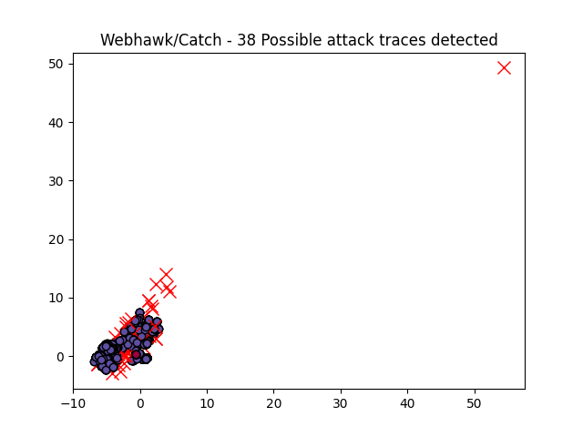

Webhawk Catch ReportUnsupervised learning Web logs/OS processes attack detection. Date: 18/06/25 at 18:32:59 GMTLog file: /Users/walid/Downloads/access.log.2025-01-18 Log type: apache logs Findings: 282 |
 |
| Severity | Related CVE(s) | Line# | LLM Insights | Log line |
| High | CVE-2022-40087 CVE-2021-40889 CVE-2021-3129 CVE-2019-16915 CVE-2019-6713 CVE-2018-10686 CVE-2017-16894 CVE-2009-2852 |
11 | N/A | 137.220.202.57 - - [18/Jan/2025:01:44:58 -0800] "GET /?s=/index/%5Cthink%5Capp/invokefunction&function=call_user_func_array&vars[0]=file_put_contents&vars[1][]=isxfk.php&vars[1][]=xinghuoxise$ HTTP/1.1" 200 49089 "http://www.secrepo.com/?s=/index/%5Cthink%5Capp/invokefunction&function=call_user_func_array&vars[0]=file_put_contents&vars[1][]=isxfk.php&vars[1][]=xinghuoxise$" "Mozilla/4.0 (compatible# MSIE 9.0# Windows NT 6.1)" |
| High | No CVE found | 20 | N/A | 114.119.151.93 - - [18/Jan/2025:02:30:02 -0800] "GET /honeypot/Honeypot%20-%20Howto%20-%20BSides%20Austin.pdf HTTP/1.1" 200 2928571 "http://www.secrepo.com/honeypot/?C=N%3BO%3DD" "Mozilla/5.0 (Linux# Android 7.0#) AppleWebKit/537.36 (KHTML# like Gecko) Mobile Safari/537.36 (compatible# PetalBot#+https://webmaster.petalsearch.com/site/petalbot)" |
| High | No CVE found | 26 | N/A | 47.243.56.196 - - [18/Jan/2025:03:04:17 -0800] "GET /maccdc2012/dns.log.gz HTTP/1.1" 200 6607379 "-" "Mozilla/5.0 (Macintosh# Intel Mac OS X 10_15_7) AppleWebKit/537.36 (KHTML# like Gecko) Chrome/109.0.0.0 Safari/537.36" |
| High | No CVE found | 40 | N/A | 51.222.253.15 - - [18/Jan/2025:04:34:25 -0800] "GET /Datasets%20Description/ HTTP/1.1" 200 633 "-" "Mozilla/5.0 (compatible# AhrefsBot/7.0# +http://ahrefs.com/robot/)" |
| High | No CVE found | 56 | N/A | 103.194.187.170 - - [18/Jan/2025:05:34:54 -0800] "GET /e/data/js/ajax.js HTTP/1.1" 404 328 "-" "Mozilla/5.0 (Windows NT 10.0# WOW64# rv:48.0) Gecko/20100101 Firefox/48.0" |
| High | No CVE found | 91 | N/A | 175.110.5.131 - - [18/Jan/2025:08:03:25 -0800] "GET /twitter-icon.png HTTP/1.1" 200 27916 "http://www.secrepo.com/" "Mozilla/5.0 (Windows NT 10.0# Win64# x64) AppleWebKit/537.36 (KHTML# like Gecko) Chrome/132.0.0.0 Safari/537.36" |
| High | 140 | N/A | 45.56.71.143 - - [18/Jan/2025:08:33:07 -0800] "GET /Datasets%20Description/Network/N/A HTTP/1.1" 404 328 "-" "Mozilla/5.0 (Macintosh# Intel Mac OS X 10_15_7) AppleWebKit/605.1.15 (KHTML# like Gecko) Version/17.5 Safari/605.1.15 MarketGoo/2.1" | |
| High | 163 | N/A | 45.56.71.143 - - [18/Jan/2025:08:33:16 -0800] "GET /Datasets%20Description/ HTTP/1.1" 200 677 "-" "Mozilla/5.0 (Macintosh# Intel Mac OS X 10_15_7) AppleWebKit/605.1.15 (KHTML# like Gecko) Version/17.5 Safari/605.1.15 MarketGoo/2.1" | |
| High | 350 | N/A | 57.141.7.8 - - [18/Jan/2025:10:31:02 -0800] "GET /Datasets%20Description/HTML_Bro_log_1/loaded_scripts.html HTTP/1.1" 429 487 "-" "meta-externalagent/1.1 (+https://developers.facebook.com/docs/sharing/webmasters/crawler)" | |
| High | No CVE found | 373 | N/A | 3.94.40.182 - - [18/Jan/2025:11:23:07 -0800] "GET /robots.txt HTTP/1.1" 200 340 "-" "Mozilla/5.0 AppleWebKit/537.36 (KHTML# like Gecko# compatible# Amazonbot/0.1# +https://developer.amazon.com/support/amazonbot) Chrome/119.0.6045.214 Safari/537.36" |
| High | No CVE found | 374 | N/A | 184.73.167.217 - - [18/Jan/2025:11:23:09 -0800] "GET / HTTP/1.1" 200 13149 "-" "Mozilla/5.0 AppleWebKit/537.36 (KHTML# like Gecko# compatible# Amazonbot/0.1# +https://developer.amazon.com/support/amazonbot) Chrome/119.0.6045.214 Safari/537.36" |
| High | No CVE found | 378 | N/A | 52.2.191.202 - - [18/Jan/2025:11:23:54 -0800] "GET /honeypot/BSidesDFW%20-%202014.ipynb HTTP/1.1" 200 930884 "-" "Mozilla/5.0 AppleWebKit/537.36 (KHTML# like Gecko# compatible# Amazonbot/0.1# +https://developer.amazon.com/support/amazonbot) Chrome/119.0.6045.214 Safari/537.36" |
| High | 395 | N/A | 50.16.216.166 - - [18/Jan/2025:11:24:49 -0800] "GET /Datasets%20Description/ HTTP/1.1" 200 640 "-" "Mozilla/5.0 AppleWebKit/537.36 (KHTML# like Gecko# compatible# Amazonbot/0.1# +https://developer.amazon.com/support/amazonbot) Chrome/119.0.6045.214 Safari/537.36" | |
| High | 445 | N/A | 52.3.156.186 - - [18/Jan/2025:11:28:01 -0800] "GET /Datasets%20Description/PE_malware/Zeus.html HTTP/1.1" 200 1661 "-" "Mozilla/5.0 AppleWebKit/537.36 (KHTML# like Gecko# compatible# Amazonbot/0.1# +https://developer.amazon.com/support/amazonbot) Chrome/119.0.6045.214 Safari/537.36" | |
| High | 458 | N/A | 100.27.153.9 - - [18/Jan/2025:11:28:49 -0800] "GET /Datasets%20Description/PE_malware/ HTTP/1.1" 200 649 "-" "Mozilla/5.0 AppleWebKit/537.36 (KHTML# like Gecko# compatible# Amazonbot/0.1# +https://developer.amazon.com/support/amazonbot) Chrome/119.0.6045.214 Safari/537.36" | |
| High | No CVE found | 461 | N/A | 3.229.95.193 - - [18/Jan/2025:11:28:57 -0800] "GET /self.logs/ HTTP/1.1" 200 54359 "-" "Mozilla/5.0 AppleWebKit/537.36 (KHTML# like Gecko# compatible# Amazonbot/0.1# +https://developer.amazon.com/support/amazonbot) Chrome/119.0.6045.214 Safari/537.36" |
| High | No CVE found | 951 | N/A | 143.92.34.17 - - [18/Jan/2025:12:01:03 -0800] "GET /phpcms/modules/formguide/install/templates/show_js.html HTTP/1.1" 429 476 "http://www.secrepo.com/phpcms/modules/formguide/install/templates/show_js.html" "Mozilla/4.0 (compatible# MSIE 9.0# Windows NT 6.1)" |
| High | 2621 | N/A | 114.119.153.152 - - [18/Jan/2025:13:52:10 -0800] "GET /Datasets%20Description/HTML_Bro_log_2/loaded_scripts.html HTTP/1.1" 200 1543 "http://www.secrepo.com/Datasets%20Description/HTML_Bro_log_2/?C=D%3BO%3DA" "Mozilla/5.0 (Linux# Android 7.0#) AppleWebKit/537.36 (KHTML# like Gecko) Mobile Safari/537.36 (compatible# PetalBot#+https://webmaster.petalsearch.com/site/petalbot)" | |
| High | No CVE found | 4983 | N/A | 69.48.207.231 - - [18/Jan/2025:16:24:23 -0800] "GET /wp-content/plugins/fix/up.php HTTP/1.1" 301 533 "-" "Mozlila/5.0 (Linux# Android 7.0# SM-G892A Bulid/NRD90M# wv) AppleWebKit/537.36 (KHTML# like Gecko) Version/4.0 Chrome/60.0.3112.107 Moblie Safari/537.36" |
| High | 5044 | N/A | 69.48.207.231 - - [18/Jan/2025:16:27:14 -0800] "GET /wp-content/index.php?x=ooo HTTP/1.1" 301 527 "-" "Mozlila/5.0 (Linux# Android 7.0# SM-G892A Bulid/NRD90M# wv) AppleWebKit/537.36 (KHTML# like Gecko) Version/4.0 Chrome/60.0.3112.107 Moblie Safari/537.36" | |
| High | No CVE found | 5048 | N/A | 69.48.207.231 - - [18/Jan/2025:16:27:17 -0800] "GET /wp-includes/ID3/ HTTP/1.1" 429 486 "-" "Mozlila/5.0 (Linux# Android 7.0# SM-G892A Bulid/NRD90M# wv) AppleWebKit/537.36 (KHTML# like Gecko) Version/4.0 Chrome/60.0.3112.107 Moblie Safari/537.36" |
| High | 5179 | N/A | 195.154.83.189 - - [18/Jan/2025:16:35:32 -0800] "GET /honeypot/Honeypot%20-%20Howto%20-%20BSides%20Austin.pdf HTTP/1.1" 200 1935960 "-" "Mozilla/5.0 (Windows NT 10.0# Win64# x64# Xbox# Xbox One) AppleWebKit/537.36 (KHTML# like Gecko) Chrome/114.0.0.0 Safari/537.36 Edge/44.18363.8131" | |
| High | No CVE found | 5285 | N/A | 104.45.200.51 - - [18/Jan/2025:16:42:29 -0800] "HEAD / HTTP/1.1" 200 359 "-" "Mozilla/5.0 (Macintosh# Intel Mac OS X 10_11_1) AppleWebKit/537.36 (KHTML# like Gecko) Chrome/47.0.2526.106 Safari/537.36" |
| High | No CVE found | 5810 | N/A | 1.162.142.185 - - [18/Jan/2025:20:02:16 -0800] "HEAD / HTTP/1.1" 200 396 "http://www.secrepo.com" "Mozilla/5.0 (Windows NT 6.1# WOW64# rv:18.0) Gecko/20100101 Firefox/18.0" |
| High | No CVE found | 5811 | N/A | 1.162.142.185 - - [18/Jan/2025:20:02:16 -0800] "HEAD /index.php?s=/home/page/uploadImg HTTP/1.1" 404 231 "http://www.secrepo.com/index.php?s=/home/page/uploadImg" "Mozilla/5.0 (Windows NT 6.1# WOW64# rv:18.0) Gecko/20100101 Firefox/18.0" |
| High | CVE-2006-3987 CVE-2006-3737 CVE-2006-1371 CVE-2005-1659 CVE-2005-1658 CVE-2004-2047 CVE-2003-1460 CVE-2002-0465 CVE-2002-0451 |
5812 | N/A | 1.162.142.185 - - [18/Jan/2025:20:02:17 -0800] "HEAD /management/F_E_Folder/editor/filemanager/connectors/asp/upload.asp HTTP/1.1" 404 231 "http://www.secrepo.com/management/F_E_Folder/editor/filemanager/connectors/asp/upload.asp" "Mozilla/5.0 (Windows NT 6.1# WOW64# rv:18.0) Gecko/20100101 Firefox/18.0" |
| High | No CVE found | 5814 | N/A | 1.162.142.185 - - [18/Jan/2025:20:02:18 -0800] "HEAD /upload/UploadResourcePic.ashx?ResourceID=8382 HTTP/1.1" 404 231 "http://www.secrepo.com/upload/UploadResourcePic.ashx?ResourceID=8382" "Mozilla/5.0 (Windows NT 6.1# WOW64# rv:18.0) Gecko/20100101 Firefox/18.0" |
| High | No CVE found | 5816 | N/A | 1.162.142.185 - - [18/Jan/2025:20:02:19 -0800] "HEAD /index.php?s=%2FHome%2FFile%2Fupload%2Fsession_id%2Fscevs8hub3m5ogla05a421hb42.html HTTP/1.1" 404 231 "http://www.secrepo.com/index.php?s=%2FHome%2FFile%2Fupload%2Fsession_id%2Fscevs8hub3m5ogla05a421hb42.html" "Mozilla/5.0 (Windows NT 6.1# WOW64# rv:18.0) Gecko/20100101 Firefox/18.0" |
| High | No CVE found | 5817 | N/A | 1.162.142.185 - - [18/Jan/2025:20:02:19 -0800] "HEAD /crm/modules/Home/multipleUpload.php?myatt_id=1&myatt_moduel=1 HTTP/1.1" 404 231 "http://www.secrepo.com/crm/modules/Home/multipleUpload.php?myatt_id=1&myatt_moduel=1" "Mozilla/5.0 (Windows NT 6.1# WOW64# rv:18.0) Gecko/20100101 Firefox/18.0" |
| High | No CVE found | 5819 | N/A | 182.136.189.133 - - [18/Jan/2025:20:16:48 -0800] "GET /apple-touch-icon-precomposed.png HTTP/1.1" 404 328 "-" "Safari%E6%B5%8F%E8%A7%88%E5%99%A8/16615.3.12.11.5 CFNetwork/1240.0.4.5 Darwin/20.6.0" |
| High | 5823 | N/A | 182.136.189.133 - - [18/Jan/2025:20:16:49 -0800] "GET /apple-touch-icon-precomposed.png HTTP/1.1" 404 305 "-" "Safari%E6%B5%8F%E8%A7%88%E5%99%A8/16615.3.12.11.5 CFNetwork/1240.0.4.5 Darwin/20.6.0" | |
| High | No CVE found | 5859 | N/A | 143.92.34.17 - - [18/Jan/2025:20:48:05 -0800] "GET /public/plugins/Ueditor/dialogs/attachment/fileTypeImages/icon_psd.gif HTTP/1.1" 301 613 "http://secrepo.com/public/plugins/Ueditor/dialogs/attachment/fileTypeImages/icon_psd.gif" "Mozilla/4.0 (compatible# MSIE 9.0# Windows NT 6.1)" |
| High | No CVE found | 5917 | N/A | 148.66.1.242 - - [18/Jan/2025:21:31:04 -0800] "GET /DedeCMS-V5.7.114-UTF8/uploads/install/index.php?step=2 HTTP/1.1" 404 291 "http://www.baidu.com/" "Mozilla/5.0 (Windows NT 10.0# Win64# x64) AppleWebKit/537.36 (KHTML# like Gecko) Chrome/85.0.4183.121 Safari/537.36" |
| High | No CVE found | 6091 | N/A | 143.92.32.155 - - [18/Jan/2025:23:01:06 -0800] "GET /apps/admin/view/default/layui/css/layui.css HTTP/1.1" 404 328 "http://www.secrepo.com/apps/admin/view/default/layui/css/layui.css" "Mozilla/4.0 (compatible# MSIE 9.0# Windows NT 6.1)" |
| High | No CVE found | 6186 | N/A | 134.122.135.140 - - [19/Jan/2025:00:04:00 -0800] "GET /apps/admin/view/default/layui/css/layui.css HTTP/1.1" 404 328 "http://www.secrepo.com/apps/admin/view/default/layui/css/layui.css" "Mozilla/4.0 (compatible# MSIE 9.0# Windows NT 6.1)" |
| High | No CVE found | 6187 | N/A | 51.222.253.8 - - [19/Jan/2025:00:17:00 -0800] "GET /auth.log/auth.log.gz HTTP/1.1" 200 217540 "-" "Mozilla/5.0 (compatible# AhrefsBot/7.0# +http://ahrefs.com/robot/)" |
| High | No CVE found | 6277 | N/A | 134.122.133.12 - - [19/Jan/2025:00:49:35 -0800] "GET /e/data/ecmseditor/infoeditor/plugins/smiley/images/angel_smile.png HTTP/1.1" 404 328 "http://www.secrepo.com" "Googlebot/2.1 (+http://www.googlebot.com/bot.html)" |
| High | No CVE found | 6278 | N/A | 134.122.133.12 - - [19/Jan/2025:00:49:36 -0800] "GET /e/data/js/jscolor/hs.png HTTP/1.1" 404 305 "http://www.secrepo.com" "Mozilla/5.0 (compatible# Baiduspider/2.0# +http://www.baidu.com/search/spider.html\xa3\xa9" |
| Medium | No CVE found | 115 | N/A | 45.33.21.243 - - [18/Jan/2025:08:32:39 -0800] "GET /Datasets%20Description/HTML_Bro_log_3/ HTTP/1.1" 200 800 "http://www.secrepo.com/Datasets%20Description/HTML_Bro_log_3" "Mozilla/5.0 (Macintosh# Intel Mac OS X 10_15_7) AppleWebKit/605.1.15 (KHTML# like Gecko) Version/17.5 Safari/605.1.15 MarketGoo/2.1" |
| Medium | No CVE found | 116 | N/A | 45.33.21.243 - - [18/Jan/2025:08:32:44 -0800] "GET /Datasets%20Description/Network/signatures.html HTTP/1.1" 404 328 "-" "Mozilla/5.0 (Macintosh# Intel Mac OS X 10_15_7) AppleWebKit/605.1.15 (KHTML# like Gecko) Version/17.5 Safari/605.1.15 MarketGoo/2.1" |
| Medium | No CVE found | 128 | N/A | 45.56.127.147 - - [18/Jan/2025:08:32:57 -0800] "GET /Datasets%20Description/HTML_Bro_log_1/ HTTP/1.1" 200 811 "http://www.secrepo.com/Datasets%20Description/HTML_Bro_log_1" "Mozilla/5.0 (Macintosh# Intel Mac OS X 10_15_7) AppleWebKit/605.1.15 (KHTML# like Gecko) Version/17.5 Safari/605.1.15 MarketGoo/2.1" |
| Medium | No CVE found | 130 | N/A | 45.56.79.182 - - [18/Jan/2025:08:32:58 -0800] "GET /Datasets%20Description/HTML_Bro_log_2/ HTTP/1.1" 200 809 "http://www.secrepo.com/Datasets%20Description/HTML_Bro_log_2" "Mozilla/5.0 (Macintosh# Intel Mac OS X 10_15_7) AppleWebKit/605.1.15 (KHTML# like Gecko) Version/17.5 Safari/605.1.15 MarketGoo/2.1" |
| Medium | No CVE found | 401 | N/A | 114.119.143.233 - - [18/Jan/2025:11:25:05 -0800] "GET /Datasets%20Description/HTML_Bro_log_2/ HTTP/1.1" 200 809 "http://secrepo.com/" "Mozilla/5.0 (Linux# Android 7.0#) AppleWebKit/537.36 (KHTML# like Gecko) Mobile Safari/537.36 (compatible# PetalBot#+https://webmaster.petalsearch.com/site/petalbot)" |
| Medium | No CVE found | 2310 | N/A | 114.119.143.233 - - [18/Jan/2025:13:31:50 -0800] "GET /Datasets%20Description/Network?C=S%3BO%3DA HTTP/1.1" 301 629 "https://www.secrepo.com/Datasets%20Description/Network" "Mozilla/5.0 (Linux# Android 7.0#) AppleWebKit/537.36 (KHTML# like Gecko) Mobile Safari/537.36 (compatible# PetalBot#+https://webmaster.petalsearch.com/site/petalbot)" |
| Medium | No CVE found | 80 | N/A | 57.141.7.24 - - [18/Jan/2025:07:33:54 -0800] "GET /Datasets%20Description/HTML_Bro_log_1/?C=S#O=A HTTP/1.1" 429 487 "-" "meta-externalagent/1.1 (+https://developers.facebook.com/docs/sharing/webmasters/crawler)" |
| Medium | No CVE found | 286 | N/A | 57.141.7.25 - - [18/Jan/2025:09:15:05 -0800] "GET /Datasets%20Description/HTML_Bro_log_1/?C=M#O=D HTTP/1.1" 429 487 "-" "meta-externalagent/1.1 (+https://developers.facebook.com/docs/sharing/webmasters/crawler)" |
| Medium | No CVE found | 338 | N/A | 47.238.13.12 - - [18/Jan/2025:09:37:00 -0800] "GET /Datasets%20Description/HTML_Bro_log_3/?C=S#O=D HTTP/1.1" 429 486 "-" "Mozilla/5.0 (Macintosh# Intel Mac OS X 10_15_7) AppleWebKit/537.36 (KHTML# like Gecko) Chrome/109.0.0.0 Safari/537.36" |
| Medium | No CVE found | 351 | N/A | 57.141.7.5 - - [18/Jan/2025:10:37:22 -0800] "GET /Datasets%20Description/HTML_Bro_log_1/?C=N#O=A HTTP/1.1" 429 487 "-" "meta-externalagent/1.1 (+https://developers.facebook.com/docs/sharing/webmasters/crawler)" |
| Medium | No CVE found | 363 | N/A | 57.141.7.14 - - [18/Jan/2025:11:04:35 -0800] "GET /Datasets%20Description/HTML_Bro_log_2/?C=D#O=A HTTP/1.1" 429 487 "-" "meta-externalagent/1.1 (+https://developers.facebook.com/docs/sharing/webmasters/crawler)" |
| Medium | No CVE found | 418 | N/A | 57.141.7.21 - - [18/Jan/2025:11:26:17 -0800] "GET /Datasets%20Description/HTML_Bro_log_1/?C=N#O=D HTTP/1.1" 429 487 "-" "meta-externalagent/1.1 (+https://developers.facebook.com/docs/sharing/webmasters/crawler)" |
| Medium | No CVE found | 931 | N/A | 57.141.7.19 - - [18/Jan/2025:11:59:50 -0800] "GET /Datasets%20Description/HTML_Bro_log_1/?C=S#O=D HTTP/1.1" 429 487 "-" "meta-externalagent/1.1 (+https://developers.facebook.com/docs/sharing/webmasters/crawler)" |
| Medium | No CVE found | 344 | N/A | 57.141.7.26 - - [18/Jan/2025:09:55:15 -0800] "GET /Datasets%20Description/Network/dhcp.html HTTP/1.1" 429 486 "-" "meta-externalagent/1.1 (+https://developers.facebook.com/docs/sharing/webmasters/crawler)" |
| Medium | No CVE found | 602 | N/A | 57.141.7.17 - - [18/Jan/2025:11:38:24 -0800] "GET /Datasets%20Description/Network/smtp.html HTTP/1.1" 429 487 "-" "meta-externalagent/1.1 (+https://developers.facebook.com/docs/sharing/webmasters/crawler)" |
| Medium | No CVE found | 1078 | N/A | 57.141.7.8 - - [18/Jan/2025:12:09:26 -0800] "GET /Datasets%20Description/Network/ssl.html HTTP/1.1" 429 487 "-" "meta-externalagent/1.1 (+https://developers.facebook.com/docs/sharing/webmasters/crawler)" |
| Medium | No CVE found | 4984 | N/A | 69.48.207.231 - - [18/Jan/2025:16:24:24 -0800] "GET /wp-content/plugins/fix/up.php HTTP/1.1" 429 486 "-" "Mozlila/5.0 (Linux# Android 7.0# SM-G892A Bulid/NRD90M# wv) AppleWebKit/537.36 (KHTML# like Gecko) Version/4.0 Chrome/60.0.3112.107 Moblie Safari/537.36" |
| Medium | No CVE found | 5815 | N/A | 1.162.142.185 - - [18/Jan/2025:20:02:18 -0800] "HEAD /UEditor/net/controller.ashx?action=catchimage HTTP/1.1" 404 231 "http://www.secrepo.com/UEditor/net/controller.ashx?action=catchimage" "Mozilla/5.0 (Windows NT 6.1# WOW64# rv:18.0) Gecko/20100101 Firefox/18.0" |
| Medium | No CVE found | 6271 | N/A | 134.122.133.12 - - [19/Jan/2025:00:49:34 -0800] "GET /zb_system/image/common/user_1.png HTTP/1.1" 404 328 "http://www.secrepo.com" "Googlebot/2.1 (+http://www.googlebot.com/bot.html)" |
| Medium | No CVE found | 6275 | N/A | 134.122.133.12 - - [19/Jan/2025:00:49:35 -0800] "GET /include/ckeditor/images/addon.gif HTTP/1.1" 404 328 "http://www.secrepo.com" "Sogou Push Spider/3.0(+http://www.sogou.com/docs/help/webmasters.htm#07\xa1\xe5)" |
| Medium | No CVE found | 354 | N/A | 185.147.125.23 - - [18/Jan/2025:10:39:05 -0800] "GET / HTTP/1.0" 429 449 "http://www.secrepo.com/" "Mozilla/5.0 (Windows NT 10.0# Win64# x64) AppleWebKit/537.36 (KHTML# like Gecko) Chrome/131.0.0.0 Safari/537.36" |
| Medium | No CVE found | 360 | N/A | 106.227.49.113 - - [18/Jan/2025:10:58:53 -0800] "GET / HTTP/1.1" 429 449 "http://secrepo.com" "Mozilla/5.0 (iPhone# CPU iPhone OS 13_2_3 like Mac OS X) AppleWebKit/605.1.15 (KHTML# like Gecko) Version/13.0.3 Mobile/15E148 Safari/604.1" |
| Medium | No CVE found | 3013 | N/A | 66.249.66.74 - - [18/Jan/2025:14:18:12 -0800] "HEAD / HTTP/1.1" 301 223 "-" "Mozilla/5.0 (compatible# Googlebot/2.1# +http://www.google.com/bot.html)" |
| Medium | No CVE found | 4221 | N/A | 124.225.164.130 - - [18/Jan/2025:15:38:26 -0800] "GET / HTTP/1.1" 429 449 "-" "Mozilla/5.0 (iPhone# CPU iPhone OS 13_2_3 like Mac OS X) AppleWebKit/605.1.15 (KHTML# like Gecko) Version/13.0.3 Mobile/15E148 Safari/604.1" |
| Medium | No CVE found | 5652 | N/A | 35.171.144.152 - - [18/Jan/2025:17:52:49 -0800] "GET / HTTP/1.1" 429 431 "-" "Mozilla/5.0 (Windows NT 10.0# Win64# x64) AppleWebKit/537.36 (KHTML# like Gecko) Chrome/100.0.4896.75 Safari/537.36" |
| Medium | No CVE found | 5685 | N/A | 124.236.100.56 - - [18/Jan/2025:18:24:22 -0800] "GET / HTTP/1.1" 429 486 "-" "Mozilla/5.0 (compatible# MSIE 9.0# Windows NT 6.0) Opera 12.14" |
| Medium | No CVE found | 6120 | N/A | 148.251.121.91 - - [18/Jan/2025:23:17:26 -0800] "HEAD / HTTP/1.1" 301 167 "-" "DomainStatsBot/1.0 (https://domainstats.com/pages/our-bot)" |
| Medium | No CVE found | 79 | N/A | 57.141.7.18 - - [18/Jan/2025:07:28:43 -0800] "GET /self.logs/?C=D#O=A HTTP/1.1" 429 487 "-" "meta-externalagent/1.1 (+https://developers.facebook.com/docs/sharing/webmasters/crawler)" |
| Medium | No CVE found | 82 | N/A | 57.141.7.14 - - [18/Jan/2025:07:44:40 -0800] "GET /self.logs/?C=M#O=A HTTP/1.1" 429 487 "-" "meta-externalagent/1.1 (+https://developers.facebook.com/docs/sharing/webmasters/crawler)" |
| Medium | No CVE found | 340 | N/A | 57.141.7.8 - - [18/Jan/2025:09:40:44 -0800] "GET /self.logs/?C=S#O=D HTTP/1.1" 429 487 "-" "meta-externalagent/1.1 (+https://developers.facebook.com/docs/sharing/webmasters/crawler)" |
| Medium | No CVE found | 366 | N/A | 57.141.7.8 - - [18/Jan/2025:11:08:31 -0800] "GET /self.logs/?C=N#O=A HTTP/1.1" 429 487 "-" "meta-externalagent/1.1 (+https://developers.facebook.com/docs/sharing/webmasters/crawler)" |
| Medium | No CVE found | 5002 | N/A | 69.48.207.231 - - [18/Jan/2025:16:25:00 -0800] "GET /wp-admin/css/themes.php HTTP/1.1" 429 486 "-" "Mozlila/5.0 (Linux# Android 7.0# SM-G892A Bulid/NRD90M# wv) AppleWebKit/537.36 (KHTML# like Gecko) Version/4.0 Chrome/60.0.3112.107 Moblie Safari/537.36" |
| Medium | No CVE found | 5046 | N/A | 69.48.207.231 - - [18/Jan/2025:16:27:17 -0800] "GET /wp-includes/ID3/ HTTP/1.1" 301 507 "-" "Mozlila/5.0 (Linux# Android 7.0# SM-G892A Bulid/NRD90M# wv) AppleWebKit/537.36 (KHTML# like Gecko) Version/4.0 Chrome/60.0.3112.107 Moblie Safari/537.36" |
| Medium | No CVE found | 6159 | N/A | 134.122.135.140 - - [18/Jan/2025:23:54:30 -0800] "GET /plus/img/df_dedetitle.gif HTTP/1.1" 404 328 "http://www.secrepo.com/plus/img/df_dedetitle.gif" "Mozilla/4.0 (compatible# MSIE 9.0# Windows NT 6.1)" |
| Medium | No CVE found | 6273 | N/A | 134.122.133.12 - - [19/Jan/2025:00:49:35 -0800] "GET /zb_users/avatar/0.png HTTP/1.1" 404 305 "http://www.secrepo.com" "Mozilla/5.0 (compatible# iaskspider/1.0# MSIE 6.0)" |
| Medium | No CVE found | 48 | N/A | 142.118.236.156 - - [18/Jan/2025:05:24:31 -0800] "GET /self.logs/ HTTP/1.1" 200 54396 "-" "Mozilla/5.0 (Windows NT 10.0# Win64# x64) AppleWebKit/537.36 (KHTML# like Gecko) Chrome/131.0.0.0 Safari/537.36" |
| Medium | No CVE found | 51 | N/A | 142.118.236.156 - - [18/Jan/2025:05:27:00 -0800] "GET /self.logs/ HTTP/1.1" 200 54396 "-" "python-requests/2.32.3" |
| Medium | No CVE found | 53 | N/A | 142.118.236.156 - - [18/Jan/2025:05:29:00 -0800] "GET /self.logs/ HTTP/1.1" 200 54396 "-" "python-requests/2.32.3" |
| Medium | No CVE found | 92 | N/A | 175.110.5.131 - - [18/Jan/2025:08:03:26 -0800] "GET /GitHub-Mark.png HTTP/1.1" 200 7533 "http://www.secrepo.com/" "Mozilla/5.0 (Windows NT 10.0# Win64# x64) AppleWebKit/537.36 (KHTML# like Gecko) Chrome/132.0.0.0 Safari/537.36" |
| Medium | No CVE found | 136 | N/A | 45.56.127.147 - - [18/Jan/2025:08:33:00 -0800] "GET /self.logs/ HTTP/1.1" 200 54396 "-" "Mozilla/5.0 (Macintosh# Intel Mac OS X 10_15_7) AppleWebKit/605.1.15 (KHTML# like Gecko) Version/17.5 Safari/605.1.15 MarketGoo/2.1" |
| Medium | No CVE found | 5271 | N/A | 174.172.64.102 - - [18/Jan/2025:16:41:36 -0800] "GET /GitHub-Mark.png HTTP/1.1" 200 7533 "http://www.secrepo.com/" "Mozilla/5.0 (iPhone# CPU iPhone OS 18_1_1 like Mac OS X) AppleWebKit/605.1.15 (KHTML# like Gecko) Version/18.1.1 Mobile/15E148 Safari/604.1" |
| Medium | No CVE found | 5820 | N/A | 182.136.189.133 - - [18/Jan/2025:20:16:48 -0800] "GET /apple-touch-icon.png HTTP/1.1" 404 305 "-" "Safari%E6%B5%8F%E8%A7%88%E5%99%A8/16615.3.12.11.5 CFNetwork/1240.0.4.5 Darwin/20.6.0" |
| Medium | No CVE found | 5824 | N/A | 182.136.189.133 - - [18/Jan/2025:20:16:50 -0800] "GET /apple-touch-icon.png HTTP/1.1" 404 305 "-" "Safari%E6%B5%8F%E8%A7%88%E5%99%A8/16615.3.12.11.5 CFNetwork/1240.0.4.5 Darwin/20.6.0" |
| Medium | No CVE found | 5827 | N/A | 40.77.167.254 - - [18/Jan/2025:20:23:56 -0800] "GET /self.logs/ HTTP/1.1" 200 54352 "-" "Mozilla/5.0 AppleWebKit/537.36 (KHTML# like Gecko# compatible# bingbot/2.0# +http://www.bing.com/bingbot.htm) Chrome/116.0.1938.76 Safari/537.36" |
| Medium | No CVE found | 58 | N/A | 40.77.167.158 - - [18/Jan/2025:06:04:16 -0800] "GET /self.logs/access.log.2020-01-25.gz HTTP/1.1" 301 487 "-" "Mozilla/5.0 AppleWebKit/537.36 (KHTML# like Gecko# compatible# bingbot/2.0# +http://www.bing.com/bingbot.htm) Chrome/116.0.1938.76 Safari/537.36" |
| Medium | No CVE found | 69 | N/A | 40.77.167.8 - - [18/Jan/2025:06:51:40 -0800] "GET /self.logs/error.log.2023-03-08.gz HTTP/1.1" 301 485 "-" "Mozilla/5.0 AppleWebKit/537.36 (KHTML# like Gecko# compatible# bingbot/2.0# +http://www.bing.com/bingbot.htm) Chrome/116.0.1938.76 Safari/537.36" |
| Medium | No CVE found | 101 | N/A | 156.228.118.56 - - [18/Jan/2025:08:20:00 -0800] "GET /honeypot/Honeypot%20-%20Howto.pdf HTTP/1.1" 200 1279529 "-" "Mozilla/5.0 (Macintosh# Intel Mac OS X 12_5) AppleWebKit/537.36 (KHTML# like Gecko) Chrome/114.0.0.0 YaBrowser/22.7.0 Yowser/2.5 Safari/537.36" |
| Medium | No CVE found | 2942 | N/A | 40.77.167.7 - - [18/Jan/2025:14:13:33 -0800] "GET /self.logs/access.log.2017-09-29.gz HTTP/1.1" 301 487 "-" "Mozilla/5.0 AppleWebKit/537.36 (KHTML# like Gecko# compatible# bingbot/2.0# +http://www.bing.com/bingbot.htm) Chrome/116.0.1938.76 Safari/537.36" |
| Medium | No CVE found | 3911 | N/A | 40.77.167.78 - - [18/Jan/2025:15:17:59 -0800] "GET /self.logs/error.log.2023-02-10.gz HTTP/1.1" 301 485 "-" "Mozilla/5.0 AppleWebKit/537.36 (KHTML# like Gecko# compatible# bingbot/2.0# +http://www.bing.com/bingbot.htm) Chrome/116.0.1938.76 Safari/537.36" |
| Medium | No CVE found | 4179 | N/A | 40.77.167.126 - - [18/Jan/2025:15:35:48 -0800] "GET /self.logs/error.log.2022-05-15.gz HTTP/1.1" 301 485 "-" "Mozilla/5.0 AppleWebKit/537.36 (KHTML# like Gecko# compatible# bingbot/2.0# +http://www.bing.com/bingbot.htm) Chrome/116.0.1938.76 Safari/537.36" |
| Medium | No CVE found | 5635 | N/A | 52.167.144.185 - - [18/Jan/2025:17:08:18 -0800] "GET /self.logs/access.log.2019-09-22.gz HTTP/1.1" 301 487 "-" "Mozilla/5.0 AppleWebKit/537.36 (KHTML# like Gecko# compatible# bingbot/2.0# +http://www.bing.com/bingbot.htm) Chrome/116.0.1938.76 Safari/537.36" |
| Medium | No CVE found | 5650 | N/A | 52.167.144.195 - - [18/Jan/2025:17:47:33 -0800] "GET /self.logs/access.log.2018-08-08.gz HTTP/1.1" 301 487 "-" "Mozilla/5.0 AppleWebKit/537.36 (KHTML# like Gecko# compatible# bingbot/2.0# +http://www.bing.com/bingbot.htm) Chrome/116.0.1938.76 Safari/537.36" |
| Medium | No CVE found | 5752 | N/A | 40.77.167.121 - - [18/Jan/2025:19:29:22 -0800] "GET /self.logs/access.log.2018-09-16.gz HTTP/1.1" 301 487 "-" "Mozilla/5.0 AppleWebKit/537.36 (KHTML# like Gecko# compatible# bingbot/2.0# +http://www.bing.com/bingbot.htm) Chrome/116.0.1938.76 Safari/537.36" |
| Medium | No CVE found | 5825 | N/A | 40.77.167.22 - - [18/Jan/2025:20:18:39 -0800] "GET /self.logs/access.log.2019-04-05.gz HTTP/1.1" 301 487 "-" "Mozilla/5.0 AppleWebKit/537.36 (KHTML# like Gecko# compatible# bingbot/2.0# +http://www.bing.com/bingbot.htm) Chrome/116.0.1938.76 Safari/537.36" |
| Medium | No CVE found | 138 | N/A | 45.56.127.147 - - [18/Jan/2025:08:33:05 -0800] "GET /Datasets%20Description/HTML_Bro_log_1/?C=N#O=D HTTP/1.1" 200 810 "http://www.secrepo.com/Datasets%20Description/HTML_Bro_log_1?C=N#O=D" "Mozilla/5.0 (Macintosh# Intel Mac OS X 10_15_7) AppleWebKit/605.1.15 (KHTML# like Gecko) Version/17.5 Safari/605.1.15 MarketGoo/2.1" |
| Medium | No CVE found | 143 | N/A | 45.56.127.147 - - [18/Jan/2025:08:33:08 -0800] "GET /Datasets%20Description/HTML_Bro_log_3/?C=N#O=D HTTP/1.1" 200 799 "http://www.secrepo.com/Datasets%20Description/HTML_Bro_log_3?C=N#O=D" "Mozilla/5.0 (Macintosh# Intel Mac OS X 10_15_7) AppleWebKit/605.1.15 (KHTML# like Gecko) Version/17.5 Safari/605.1.15 MarketGoo/2.1" |
| Medium | No CVE found | 146 | N/A | 45.33.21.243 - - [18/Jan/2025:08:33:09 -0800] "GET /Datasets%20Description/HTML_Bro_log_3/?C=D#O=A HTTP/1.1" 200 800 "http://www.secrepo.com/Datasets%20Description/HTML_Bro_log_3?C=D#O=A" "Mozilla/5.0 (Macintosh# Intel Mac OS X 10_15_7) AppleWebKit/605.1.15 (KHTML# like Gecko) Version/17.5 Safari/605.1.15 MarketGoo/2.1" |
| Medium | No CVE found | 148 | N/A | 45.56.71.143 - - [18/Jan/2025:08:33:10 -0800] "GET /Datasets%20Description/HTML_Bro_log_3/?C=M#O=A HTTP/1.1" 200 800 "http://www.secrepo.com/Datasets%20Description/HTML_Bro_log_3?C=M#O=A" "Mozilla/5.0 (Macintosh# Intel Mac OS X 10_15_7) AppleWebKit/605.1.15 (KHTML# like Gecko) Version/17.5 Safari/605.1.15 MarketGoo/2.1" |
| Medium | No CVE found | 150 | N/A | 45.56.127.147 - - [18/Jan/2025:08:33:11 -0800] "GET /Datasets%20Description/HTML_Bro_log_1/?C=S#O=A HTTP/1.1" 200 804 "http://www.secrepo.com/Datasets%20Description/HTML_Bro_log_1?C=S#O=A" "Mozilla/5.0 (Macintosh# Intel Mac OS X 10_15_7) AppleWebKit/605.1.15 (KHTML# like Gecko) Version/17.5 Safari/605.1.15 MarketGoo/2.1" |
| Medium | No CVE found | 153 | N/A | 45.33.21.243 - - [18/Jan/2025:08:33:13 -0800] "GET /Datasets%20Description/HTML_Bro_log_1/?C=M#O=A HTTP/1.1" 200 811 "http://www.secrepo.com/Datasets%20Description/HTML_Bro_log_1?C=M#O=A" "Mozilla/5.0 (Macintosh# Intel Mac OS X 10_15_7) AppleWebKit/605.1.15 (KHTML# like Gecko) Version/17.5 Safari/605.1.15 MarketGoo/2.1" |
| Medium | No CVE found | 155 | N/A | 45.33.21.243 - - [18/Jan/2025:08:33:13 -0800] "GET /Datasets%20Description/HTML_Bro_log_2/?C=N#O=D HTTP/1.1" 200 809 "http://www.secrepo.com/Datasets%20Description/HTML_Bro_log_2?C=N#O=D" "Mozilla/5.0 (Macintosh# Intel Mac OS X 10_15_7) AppleWebKit/605.1.15 (KHTML# like Gecko) Version/17.5 Safari/605.1.15 MarketGoo/2.1" |
| Medium | No CVE found | 160 | N/A | 45.56.71.143 - - [18/Jan/2025:08:33:15 -0800] "GET /Datasets%20Description/HTML_Bro_log_1/?C=D#O=A HTTP/1.1" 200 811 "http://www.secrepo.com/Datasets%20Description/HTML_Bro_log_1?C=D#O=A" "Mozilla/5.0 (Macintosh# Intel Mac OS X 10_15_7) AppleWebKit/605.1.15 (KHTML# like Gecko) Version/17.5 Safari/605.1.15 MarketGoo/2.1" |
| Medium | No CVE found | 165 | N/A | 45.56.127.147 - - [18/Jan/2025:08:33:17 -0800] "GET /Datasets%20Description/HTML_Bro_log_2/?C=D#O=A HTTP/1.1" 200 809 "http://www.secrepo.com/Datasets%20Description/HTML_Bro_log_2?C=D#O=A" "Mozilla/5.0 (Macintosh# Intel Mac OS X 10_15_7) AppleWebKit/605.1.15 (KHTML# like Gecko) Version/17.5 Safari/605.1.15 MarketGoo/2.1" |
| Medium | No CVE found | 169 | N/A | 45.33.21.243 - - [18/Jan/2025:08:33:18 -0800] "GET /Datasets%20Description/HTML_Bro_log_2/?C=M#O=A HTTP/1.1" 200 809 "http://www.secrepo.com/Datasets%20Description/HTML_Bro_log_2?C=M#O=A" "Mozilla/5.0 (Macintosh# Intel Mac OS X 10_15_7) AppleWebKit/605.1.15 (KHTML# like Gecko) Version/17.5 Safari/605.1.15 MarketGoo/2.1" |
| Medium | No CVE found | 173 | N/A | 45.56.71.143 - - [18/Jan/2025:08:33:19 -0800] "GET /Datasets%20Description/HTML_Bro_log_3/?C=S#O=A HTTP/1.1" 200 795 "http://www.secrepo.com/Datasets%20Description/HTML_Bro_log_3?C=S#O=A" "Mozilla/5.0 (Macintosh# Intel Mac OS X 10_15_7) AppleWebKit/605.1.15 (KHTML# like Gecko) Version/17.5 Safari/605.1.15 MarketGoo/2.1" |
| Medium | No CVE found | 174 | N/A | 45.56.79.182 - - [18/Jan/2025:08:33:19 -0800] "GET /Datasets%20Description/HTML_Bro_log_2/?C=S#O=A HTTP/1.1" 200 801 "http://www.secrepo.com/Datasets%20Description/HTML_Bro_log_2?C=S#O=A" "Mozilla/5.0 (Macintosh# Intel Mac OS X 10_15_7) AppleWebKit/605.1.15 (KHTML# like Gecko) Version/17.5 Safari/605.1.15 MarketGoo/2.1" |
| Medium | No CVE found | 5719 | N/A | 51.222.253.6 - - [18/Jan/2025:19:14:58 -0800] "GET /Datasets%20Description/HTML_Bro_log_2/?C=D#O=D HTTP/1.1" 200 788 "-" "Mozilla/5.0 (compatible# AhrefsBot/7.0# +http://ahrefs.com/robot/)" |
| Medium | No CVE found | 6 | N/A | 142.54.167.74 - - [18/Jan/2025:01:18:31 -0800] "GET /e/data/images/arrow.gif HTTP/1.1" 404 328 "http://www.secrepo.com/e/data/images/arrow.gif" "Mozilla/4.0 (compatible# MSIE 9.0# Windows NT 6.1)" |
| Medium | No CVE found | 68 | N/A | 57.141.7.8 - - [18/Jan/2025:06:44:47 -0800] "GET /self.logs/2016/?C=M#O=A HTTP/1.1" 429 487 "-" "meta-externalagent/1.1 (+https://developers.facebook.com/docs/sharing/webmasters/crawler)" |
| Medium | No CVE found | 114 | N/A | 45.33.21.243 - - [18/Jan/2025:08:32:39 -0800] "GET /Datasets%20Description/HTML_Bro_log_3 HTTP/1.1" 301 619 "-" "Mozilla/5.0 (Macintosh# Intel Mac OS X 10_15_7) AppleWebKit/605.1.15 (KHTML# like Gecko) Version/17.5 Safari/605.1.15 MarketGoo/2.1" |
| Medium | No CVE found | 126 | N/A | 45.56.127.147 - - [18/Jan/2025:08:32:57 -0800] "GET /Datasets%20Description/HTML_Bro_log_1 HTTP/1.1" 301 619 "-" "Mozilla/5.0 (Macintosh# Intel Mac OS X 10_15_7) AppleWebKit/605.1.15 (KHTML# like Gecko) Version/17.5 Safari/605.1.15 MarketGoo/2.1" |
| Medium | No CVE found | 129 | N/A | 45.56.79.182 - - [18/Jan/2025:08:32:58 -0800] "GET /Datasets%20Description/HTML_Bro_log_2 HTTP/1.1" 301 619 "-" "Mozilla/5.0 (Macintosh# Intel Mac OS X 10_15_7) AppleWebKit/605.1.15 (KHTML# like Gecko) Version/17.5 Safari/605.1.15 MarketGoo/2.1" |
| Medium | No CVE found | 188 | N/A | 57.141.7.4 - - [18/Jan/2025:08:59:40 -0800] "GET /self.logs/2016/?C=M#O=D HTTP/1.1" 429 487 "-" "meta-externalagent/1.1 (+https://developers.facebook.com/docs/sharing/webmasters/crawler)" |
| Medium | No CVE found | 339 | N/A | 57.141.7.2 - - [18/Jan/2025:09:39:39 -0800] "GET /self.logs/2016/?C=D#O=A HTTP/1.1" 429 487 "-" "meta-externalagent/1.1 (+https://developers.facebook.com/docs/sharing/webmasters/crawler)" |
| Medium | No CVE found | 341 | N/A | 57.141.7.18 - - [18/Jan/2025:09:45:38 -0800] "GET /self.logs/2015/?C=M#O=A HTTP/1.1" 429 487 "-" "meta-externalagent/1.1 (+https://developers.facebook.com/docs/sharing/webmasters/crawler)" |
| Medium | No CVE found | 343 | N/A | 8.210.8.206 - - [18/Jan/2025:09:46:27 -0800] "GET /Datasets%20Description/?C=N#O=D HTTP/1.1" 429 486 "-" "Mozilla/5.0 (Macintosh# Intel Mac OS X 10_15_7) AppleWebKit/537.36 (KHTML# like Gecko) Chrome/109.0.0.0 Safari/537.36" |
| Medium | No CVE found | 348 | N/A | 57.141.7.27 - - [18/Jan/2025:10:25:46 -0800] "GET /self.logs/2016/?C=N#O=A HTTP/1.1" 429 487 "-" "meta-externalagent/1.1 (+https://developers.facebook.com/docs/sharing/webmasters/crawler)" |
| Medium | No CVE found | 365 | N/A | 57.141.7.17 - - [18/Jan/2025:11:06:24 -0800] "GET /self.logs/2015/?C=N#O=D HTTP/1.1" 429 487 "-" "meta-externalagent/1.1 (+https://developers.facebook.com/docs/sharing/webmasters/crawler)" |
| Medium | No CVE found | 399 | N/A | 114.119.143.233 - - [18/Jan/2025:11:25:05 -0800] "GET /Datasets%20Description/HTML_Bro_log_2 HTTP/1.1" 301 619 "http://secrepo.com/" "Mozilla/5.0 (Linux# Android 7.0#) AppleWebKit/537.36 (KHTML# like Gecko) Mobile Safari/537.36 (compatible# PetalBot#+https://webmaster.petalsearch.com/site/petalbot)" |
| Medium | No CVE found | 877 | N/A | 143.92.32.155 - - [18/Jan/2025:11:56:24 -0800] "GET /e/data/images/arrow.gif HTTP/1.1" 301 521 "http://secrepo.com/e/data/images/arrow.gif" "Mozilla/4.0 (compatible# MSIE 9.0# Windows NT 6.1)" |
| Medium | No CVE found | 6269 | N/A | 134.122.135.140 - - [19/Jan/2025:00:41:31 -0800] "GET /e/data/images/arrow.gif HTTP/1.1" 404 328 "http://www.secrepo.com/e/data/images/arrow.gif" "Mozilla/4.0 (compatible# MSIE 9.0# Windows NT 6.1)" |
| Medium | No CVE found | 380 | N/A | 52.203.68.145 - - [18/Jan/2025:11:24:04 -0800] "GET /maccdc2012/signatures.log.gz HTTP/1.1" 200 631 "-" "Mozilla/5.0 AppleWebKit/537.36 (KHTML# like Gecko# compatible# Amazonbot/0.1# +https://developer.amazon.com/support/amazonbot) Chrome/119.0.6045.214 Safari/537.36" |
| Medium | No CVE found | 387 | N/A | 44.215.235.20 - - [18/Jan/2025:11:24:17 -0800] "GET /maccdc2012/tunnel.log.gz HTTP/1.1" 200 5245 "-" "Mozilla/5.0 AppleWebKit/537.36 (KHTML# like Gecko# compatible# Amazonbot/0.1# +https://developer.amazon.com/support/amazonbot) Chrome/119.0.6045.214 Safari/537.36" |
| Medium | No CVE found | 388 | N/A | 44.209.187.99 - - [18/Jan/2025:11:24:22 -0800] "GET /maccdc2012/notice.log.gz HTTP/1.1" 200 20760 "-" "Mozilla/5.0 AppleWebKit/537.36 (KHTML# like Gecko# compatible# Amazonbot/0.1# +https://developer.amazon.com/support/amazonbot) Chrome/119.0.6045.214 Safari/537.36" |
| Medium | No CVE found | 389 | N/A | 3.93.211.16 - - [18/Jan/2025:11:24:25 -0800] "GET /maccdc2012/smtp.log.gz HTTP/1.1" 200 6919 "-" "Mozilla/5.0 AppleWebKit/537.36 (KHTML# like Gecko# compatible# Amazonbot/0.1# +https://developer.amazon.com/support/amazonbot) Chrome/119.0.6045.214 Safari/537.36" |
| Medium | No CVE found | 390 | N/A | 34.225.243.131 - - [18/Jan/2025:11:24:29 -0800] "GET /maccdc2012/http.log.gz HTTP/1.1" 200 14729940 "-" "Mozilla/5.0 AppleWebKit/537.36 (KHTML# like Gecko# compatible# Amazonbot/0.1# +https://developer.amazon.com/support/amazonbot) Chrome/119.0.6045.214 Safari/537.36" |
| Medium | No CVE found | 391 | N/A | 54.147.238.89 - - [18/Jan/2025:11:24:34 -0800] "GET /maccdc2012/dhcp.log.gz HTTP/1.1" 200 44940 "-" "Mozilla/5.0 AppleWebKit/537.36 (KHTML# like Gecko# compatible# Amazonbot/0.1# +https://developer.amazon.com/support/amazonbot) Chrome/119.0.6045.214 Safari/537.36" |
| Medium | No CVE found | 392 | N/A | 3.232.39.98 - - [18/Jan/2025:11:24:37 -0800] "GET /maccdc2012/conn.log.gz HTTP/1.1" 200 10731000 "-" "Mozilla/5.0 AppleWebKit/537.36 (KHTML# like Gecko# compatible# Amazonbot/0.1# +https://developer.amazon.com/support/amazonbot) Chrome/119.0.6045.214 Safari/537.36" |
| Medium | No CVE found | 393 | N/A | 44.209.89.189 - - [18/Jan/2025:11:24:41 -0800] "GET /maccdc2012/weird.log.gz HTTP/1.1" 200 1252817 "-" "Mozilla/5.0 AppleWebKit/537.36 (KHTML# like Gecko# compatible# Amazonbot/0.1# +https://developer.amazon.com/support/amazonbot) Chrome/119.0.6045.214 Safari/537.36" |
| Medium | No CVE found | 394 | N/A | 52.200.251.20 - - [18/Jan/2025:11:24:45 -0800] "GET /maccdc2012/files.log.gz HTTP/1.1" 200 10665300 "-" "Mozilla/5.0 AppleWebKit/537.36 (KHTML# like Gecko# compatible# Amazonbot/0.1# +https://developer.amazon.com/support/amazonbot) Chrome/119.0.6045.214 Safari/537.36" |
| Medium | No CVE found | 396 | N/A | 34.194.14.255 - - [18/Jan/2025:11:24:53 -0800] "GET /maccdc2012/ssl.log.gz HTTP/1.1" 200 1311449 "-" "Mozilla/5.0 AppleWebKit/537.36 (KHTML# like Gecko# compatible# Amazonbot/0.1# +https://developer.amazon.com/support/amazonbot) Chrome/119.0.6045.214 Safari/537.36" |
| Medium | No CVE found | 397 | N/A | 3.218.103.254 - - [18/Jan/2025:11:24:57 -0800] "GET /maccdc2012/ssh.log.gz HTTP/1.1" 200 182530 "-" "Mozilla/5.0 AppleWebKit/537.36 (KHTML# like Gecko# compatible# Amazonbot/0.1# +https://developer.amazon.com/support/amazonbot) Chrome/119.0.6045.214 Safari/537.36" |
| Medium | No CVE found | 398 | N/A | 3.219.81.66 - - [18/Jan/2025:11:25:01 -0800] "GET /maccdc2012/ftp.log.gz HTTP/1.1" 200 127724 "-" "Mozilla/5.0 AppleWebKit/537.36 (KHTML# like Gecko# compatible# Amazonbot/0.1# +https://developer.amazon.com/support/amazonbot) Chrome/119.0.6045.214 Safari/537.36" |
| Medium | No CVE found | 400 | N/A | 23.23.214.190 - - [18/Jan/2025:11:25:05 -0800] "GET /squid/access.log.gz HTTP/1.1" 200 10760200 "-" "Mozilla/5.0 AppleWebKit/537.36 (KHTML# like Gecko# compatible# Amazonbot/0.1# +https://developer.amazon.com/support/amazonbot) Chrome/119.0.6045.214 Safari/537.36" |
| Medium | No CVE found | 836 | N/A | 54.152.163.42 - - [18/Jan/2025:11:53:45 -0800] "GET /self.logs/analog_success.txt HTTP/1.1" 200 22059 "-" "Mozilla/5.0 AppleWebKit/537.36 (KHTML# like Gecko# compatible# Amazonbot/0.1# +https://developer.amazon.com/support/amazonbot) Chrome/119.0.6045.214 Safari/537.36" |
| Medium | No CVE found | 73 | N/A | 57.141.7.1 - - [18/Jan/2025:07:07:03 -0800] "GET /Datasets%20Description/HTML_Bro_log_2/dhcp.html HTTP/1.1" 429 487 "-" "meta-externalagent/1.1 (+https://developers.facebook.com/docs/sharing/webmasters/crawler)" |
| Medium | No CVE found | 81 | N/A | 57.141.7.17 - - [18/Jan/2025:07:44:08 -0800] "GET /Datasets%20Description/HTML_Bro_log_1/ftp.html HTTP/1.1" 429 486 "-" "meta-externalagent/1.1 (+https://developers.facebook.com/docs/sharing/webmasters/crawler)" |
| Medium | No CVE found | 137 | N/A | 45.56.127.147 - - [18/Jan/2025:08:33:05 -0800] "GET /Datasets%20Description/HTML_Bro_log_1?C=N#O=D HTTP/1.1" 301 635 "-" "Mozilla/5.0 (Macintosh# Intel Mac OS X 10_15_7) AppleWebKit/605.1.15 (KHTML# like Gecko) Version/17.5 Safari/605.1.15 MarketGoo/2.1" |
| Medium | No CVE found | 142 | N/A | 45.56.127.147 - - [18/Jan/2025:08:33:08 -0800] "GET /Datasets%20Description/HTML_Bro_log_3?C=N#O=D HTTP/1.1" 301 635 "-" "Mozilla/5.0 (Macintosh# Intel Mac OS X 10_15_7) AppleWebKit/605.1.15 (KHTML# like Gecko) Version/17.5 Safari/605.1.15 MarketGoo/2.1" |
| Medium | No CVE found | 145 | N/A | 45.33.21.243 - - [18/Jan/2025:08:33:09 -0800] "GET /Datasets%20Description/HTML_Bro_log_3?C=D#O=A HTTP/1.1" 301 635 "-" "Mozilla/5.0 (Macintosh# Intel Mac OS X 10_15_7) AppleWebKit/605.1.15 (KHTML# like Gecko) Version/17.5 Safari/605.1.15 MarketGoo/2.1" |
| Medium | No CVE found | 147 | N/A | 45.56.71.143 - - [18/Jan/2025:08:33:10 -0800] "GET /Datasets%20Description/HTML_Bro_log_3?C=M#O=A HTTP/1.1" 301 635 "-" "Mozilla/5.0 (Macintosh# Intel Mac OS X 10_15_7) AppleWebKit/605.1.15 (KHTML# like Gecko) Version/17.5 Safari/605.1.15 MarketGoo/2.1" |
| Medium | No CVE found | 149 | N/A | 45.56.127.147 - - [18/Jan/2025:08:33:11 -0800] "GET /Datasets%20Description/HTML_Bro_log_1?C=S#O=A HTTP/1.1" 301 635 "-" "Mozilla/5.0 (Macintosh# Intel Mac OS X 10_15_7) AppleWebKit/605.1.15 (KHTML# like Gecko) Version/17.5 Safari/605.1.15 MarketGoo/2.1" |
| Medium | No CVE found | 152 | N/A | 45.33.21.243 - - [18/Jan/2025:08:33:12 -0800] "GET /Datasets%20Description/HTML_Bro_log_1?C=M#O=A HTTP/1.1" 301 635 "-" "Mozilla/5.0 (Macintosh# Intel Mac OS X 10_15_7) AppleWebKit/605.1.15 (KHTML# like Gecko) Version/17.5 Safari/605.1.15 MarketGoo/2.1" |
| Medium | No CVE found | 154 | N/A | 45.33.21.243 - - [18/Jan/2025:08:33:13 -0800] "GET /Datasets%20Description/HTML_Bro_log_2?C=N#O=D HTTP/1.1" 301 635 "-" "Mozilla/5.0 (Macintosh# Intel Mac OS X 10_15_7) AppleWebKit/605.1.15 (KHTML# like Gecko) Version/17.5 Safari/605.1.15 MarketGoo/2.1" |
| Medium | No CVE found | 159 | N/A | 45.56.71.143 - - [18/Jan/2025:08:33:15 -0800] "GET /Datasets%20Description/HTML_Bro_log_1?C=D#O=A HTTP/1.1" 301 635 "-" "Mozilla/5.0 (Macintosh# Intel Mac OS X 10_15_7) AppleWebKit/605.1.15 (KHTML# like Gecko) Version/17.5 Safari/605.1.15 MarketGoo/2.1" |
| Medium | No CVE found | 164 | N/A | 45.56.127.147 - - [18/Jan/2025:08:33:17 -0800] "GET /Datasets%20Description/HTML_Bro_log_2?C=D#O=A HTTP/1.1" 301 635 "-" "Mozilla/5.0 (Macintosh# Intel Mac OS X 10_15_7) AppleWebKit/605.1.15 (KHTML# like Gecko) Version/17.5 Safari/605.1.15 MarketGoo/2.1" |
| Medium | No CVE found | 168 | N/A | 45.33.21.243 - - [18/Jan/2025:08:33:18 -0800] "GET /Datasets%20Description/HTML_Bro_log_2?C=M#O=A HTTP/1.1" 301 635 "-" "Mozilla/5.0 (Macintosh# Intel Mac OS X 10_15_7) AppleWebKit/605.1.15 (KHTML# like Gecko) Version/17.5 Safari/605.1.15 MarketGoo/2.1" |
| Medium | No CVE found | 171 | N/A | 45.56.71.143 - - [18/Jan/2025:08:33:19 -0800] "GET /Datasets%20Description/HTML_Bro_log_3?C=S#O=A HTTP/1.1" 301 635 "-" "Mozilla/5.0 (Macintosh# Intel Mac OS X 10_15_7) AppleWebKit/605.1.15 (KHTML# like Gecko) Version/17.5 Safari/605.1.15 MarketGoo/2.1" |
| Medium | No CVE found | 172 | N/A | 45.56.79.182 - - [18/Jan/2025:08:33:19 -0800] "GET /Datasets%20Description/HTML_Bro_log_2?C=S#O=A HTTP/1.1" 301 635 "-" "Mozilla/5.0 (Macintosh# Intel Mac OS X 10_15_7) AppleWebKit/605.1.15 (KHTML# like Gecko) Version/17.5 Safari/605.1.15 MarketGoo/2.1" |
| Medium | No CVE found | 352 | N/A | 57.141.7.19 - - [18/Jan/2025:10:38:52 -0800] "GET /Datasets%20Description/Network/?C=N#O=D HTTP/1.1" 429 487 "-" "meta-externalagent/1.1 (+https://developers.facebook.com/docs/sharing/webmasters/crawler)" |
| Medium | No CVE found | 460 | N/A | 54.84.169.196 - - [18/Jan/2025:11:29:01 -0800] "GET /Datasets%20Description/Network/N/A HTTP/1.1" 404 291 "-" "Mozilla/5.0 AppleWebKit/537.36 (KHTML# like Gecko# compatible# Amazonbot/0.1# +https://developer.amazon.com/support/amazonbot) Chrome/119.0.6045.214 Safari/537.36" |
| Medium | No CVE found | 858 | N/A | 57.141.7.2 - - [18/Jan/2025:11:55:09 -0800] "GET /Datasets%20Description/Network/?C=M#O=D HTTP/1.1" 429 487 "-" "meta-externalagent/1.1 (+https://developers.facebook.com/docs/sharing/webmasters/crawler)" |
| Medium | No CVE found | 948 | N/A | 57.141.7.5 - - [18/Jan/2025:12:00:56 -0800] "GET /Datasets%20Description/HTML_Bro_log_1/http.html HTTP/1.1" 429 487 "-" "meta-externalagent/1.1 (+https://developers.facebook.com/docs/sharing/webmasters/crawler)" |
| Medium | No CVE found | 1415 | N/A | 47.238.13.14 - - [18/Jan/2025:12:32:00 -0800] "GET /Datasets%20Description/HTML_Bro_log_3/app_stats.html HTTP/1.1" 429 476 "-" "Mozilla/5.0 (Macintosh# Intel Mac OS X 10_15_7) AppleWebKit/537.36 (KHTML# like Gecko) Chrome/109.0.0.0 Safari/537.36" |
| Medium | No CVE found | 5915 | N/A | 148.66.1.242 - - [18/Jan/2025:21:31:04 -0800] "GET /DedeCMS/uploads/install/index.php?step=2 HTTP/1.1" 404 291 "http://www.baidu.com/" "Mozilla/5.0 (Windows NT 10.0# Win64# x64) AppleWebKit/537.36 (KHTML# like Gecko) Chrome/85.0.4183.121 Safari/537.36" |
| Medium | No CVE found | 6004 | N/A | 207.180.255.131 - - [18/Jan/2025:22:02:37 -0800] "GET /wp-content/plugins/WordPressCore/include.php HTTP/1.1" 429 486 "www.google.com" "Mozlila/5.0 (Linux# Android 7.0# SM-G892A Bulid/NRD90M# wv) AppleWebKit/537.36 (KHTML# like Gecko) Version/4.0 Chrome/60.0.3112.107 Moblie Safari/537.36" |
| Medium | No CVE found | 6272 | N/A | 134.122.133.12 - - [19/Jan/2025:00:49:34 -0800] "GET /public/static/common/images/file.png HTTP/1.1" 404 328 "http://www.secrepo.com" "(compatible# Baiduspider/2.0# +http://www.baidu.com/search/spider.html\xa3\xa9" |
| Medium | No CVE found | 6274 | N/A | 134.122.133.12 - - [19/Jan/2025:00:49:35 -0800] "GET /public/static/admin/images/ok.png HTTP/1.1" 404 305 "http://www.secrepo.com" "Mozilla/5.0 (compatible# Googlebot/2.1# +http://www.google.com/bot.html)" |
| Medium | No CVE found | 5609 | N/A | 3.215.221.125 - - [18/Jan/2025:17:04:02 -0800] "GET /Datasets%20Description/HTML_Bro_log_1/?C=D#O%3DA HTTP/1.1" 200 797 "-" "Mozilla/5.0 AppleWebKit/537.36 (KHTML# like Gecko# compatible# Amazonbot/0.1# +https://developer.amazon.com/support/amazonbot) Chrome/119.0.6045.214 Safari/537.36" |
| Medium | No CVE found | 5611 | N/A | 34.231.156.59 - - [18/Jan/2025:17:04:05 -0800] "GET /Datasets%20Description/HTML_Bro_log_1/?C=D#O%3DD HTTP/1.1" 200 797 "-" "Mozilla/5.0 AppleWebKit/537.36 (KHTML# like Gecko# compatible# Amazonbot/0.1# +https://developer.amazon.com/support/amazonbot) Chrome/119.0.6045.214 Safari/537.36" |
| Medium | No CVE found | 5612 | N/A | 52.0.63.151 - - [18/Jan/2025:17:04:09 -0800] "GET /Datasets%20Description/HTML_Bro_log_1/?C=N#O%3DA HTTP/1.1" 200 797 "-" "Mozilla/5.0 AppleWebKit/537.36 (KHTML# like Gecko# compatible# Amazonbot/0.1# +https://developer.amazon.com/support/amazonbot) Chrome/119.0.6045.214 Safari/537.36" |
| Medium | No CVE found | 5613 | N/A | 34.236.185.101 - - [18/Jan/2025:17:04:13 -0800] "GET /Datasets%20Description/HTML_Bro_log_1/?C=S#O%3DA HTTP/1.1" 200 790 "-" "Mozilla/5.0 AppleWebKit/537.36 (KHTML# like Gecko# compatible# Amazonbot/0.1# +https://developer.amazon.com/support/amazonbot) Chrome/119.0.6045.214 Safari/537.36" |
| Medium | No CVE found | 5614 | N/A | 184.73.68.20 - - [18/Jan/2025:17:04:17 -0800] "GET /Datasets%20Description/HTML_Bro_log_1/?C=S#O%3DD HTTP/1.1" 200 790 "-" "Mozilla/5.0 AppleWebKit/537.36 (KHTML# like Gecko# compatible# Amazonbot/0.1# +https://developer.amazon.com/support/amazonbot) Chrome/119.0.6045.214 Safari/537.36" |
| Medium | No CVE found | 5615 | N/A | 44.207.252.58 - - [18/Jan/2025:17:04:21 -0800] "GET /Datasets%20Description/HTML_Bro_log_1/?C=M#O%3DA HTTP/1.1" 200 797 "-" "Mozilla/5.0 AppleWebKit/537.36 (KHTML# like Gecko# compatible# Amazonbot/0.1# +https://developer.amazon.com/support/amazonbot) Chrome/119.0.6045.214 Safari/537.36" |
| Medium | No CVE found | 5616 | N/A | 52.204.37.237 - - [18/Jan/2025:17:04:25 -0800] "GET /Datasets%20Description/HTML_Bro_log_1/?C=M#O%3DD HTTP/1.1" 200 797 "-" "Mozilla/5.0 AppleWebKit/537.36 (KHTML# like Gecko# compatible# Amazonbot/0.1# +https://developer.amazon.com/support/amazonbot) Chrome/119.0.6045.214 Safari/537.36" |
| Medium | No CVE found | 5617 | N/A | 3.220.70.171 - - [18/Jan/2025:17:04:29 -0800] "GET /Datasets%20Description/HTML_Bro_log_1/?C=N#O%3DD HTTP/1.1" 200 797 "-" "Mozilla/5.0 AppleWebKit/537.36 (KHTML# like Gecko# compatible# Amazonbot/0.1# +https://developer.amazon.com/support/amazonbot) Chrome/119.0.6045.214 Safari/537.36" |
| Medium | No CVE found | 5618 | N/A | 18.233.24.238 - - [18/Jan/2025:17:04:33 -0800] "GET /Datasets%20Description/HTML_Bro_log_2/?C=D#O%3DA HTTP/1.1" 200 795 "-" "Mozilla/5.0 AppleWebKit/537.36 (KHTML# like Gecko# compatible# Amazonbot/0.1# +https://developer.amazon.com/support/amazonbot) Chrome/119.0.6045.214 Safari/537.36" |
| Medium | No CVE found | 5619 | N/A | 23.23.99.55 - - [18/Jan/2025:17:04:37 -0800] "GET /Datasets%20Description/HTML_Bro_log_2/?C=D#O%3DD HTTP/1.1" 200 795 "-" "Mozilla/5.0 AppleWebKit/537.36 (KHTML# like Gecko# compatible# Amazonbot/0.1# +https://developer.amazon.com/support/amazonbot) Chrome/119.0.6045.214 Safari/537.36" |
| Medium | No CVE found | 5620 | N/A | 52.71.218.25 - - [18/Jan/2025:17:04:41 -0800] "GET /Datasets%20Description/HTML_Bro_log_2/?C=N#O%3DA HTTP/1.1" 200 795 "-" "Mozilla/5.0 AppleWebKit/537.36 (KHTML# like Gecko# compatible# Amazonbot/0.1# +https://developer.amazon.com/support/amazonbot) Chrome/119.0.6045.214 Safari/537.36" |
| Medium | No CVE found | 5621 | N/A | 23.21.119.232 - - [18/Jan/2025:17:04:45 -0800] "GET /Datasets%20Description/HTML_Bro_log_2/?C=S#O%3DA HTTP/1.1" 200 787 "-" "Mozilla/5.0 AppleWebKit/537.36 (KHTML# like Gecko# compatible# Amazonbot/0.1# +https://developer.amazon.com/support/amazonbot) Chrome/119.0.6045.214 Safari/537.36" |
| Medium | No CVE found | 5622 | N/A | 52.3.156.186 - - [18/Jan/2025:17:04:50 -0800] "GET /Datasets%20Description/HTML_Bro_log_2/?C=S#O%3DD HTTP/1.1" 200 787 "-" "Mozilla/5.0 AppleWebKit/537.36 (KHTML# like Gecko# compatible# Amazonbot/0.1# +https://developer.amazon.com/support/amazonbot) Chrome/119.0.6045.214 Safari/537.36" |
| Medium | No CVE found | 5623 | N/A | 34.192.125.239 - - [18/Jan/2025:17:04:53 -0800] "GET /Datasets%20Description/HTML_Bro_log_2/?C=M#O%3DA HTTP/1.1" 200 795 "-" "Mozilla/5.0 AppleWebKit/537.36 (KHTML# like Gecko# compatible# Amazonbot/0.1# +https://developer.amazon.com/support/amazonbot) Chrome/119.0.6045.214 Safari/537.36" |
| Medium | No CVE found | 5624 | N/A | 34.196.114.170 - - [18/Jan/2025:17:04:57 -0800] "GET /Datasets%20Description/HTML_Bro_log_2/?C=M#O%3DD HTTP/1.1" 200 795 "-" "Mozilla/5.0 AppleWebKit/537.36 (KHTML# like Gecko# compatible# Amazonbot/0.1# +https://developer.amazon.com/support/amazonbot) Chrome/119.0.6045.214 Safari/537.36" |
| Medium | No CVE found | 5625 | N/A | 44.207.252.58 - - [18/Jan/2025:17:05:01 -0800] "GET /Datasets%20Description/HTML_Bro_log_2/?C=N#O%3DD HTTP/1.1" 200 795 "-" "Mozilla/5.0 AppleWebKit/537.36 (KHTML# like Gecko# compatible# Amazonbot/0.1# +https://developer.amazon.com/support/amazonbot) Chrome/119.0.6045.214 Safari/537.36" |
| Medium | No CVE found | 5626 | N/A | 34.231.156.59 - - [18/Jan/2025:17:05:05 -0800] "GET /Datasets%20Description/HTML_Bro_log_3/?C=D#O%3DA HTTP/1.1" 200 786 "-" "Mozilla/5.0 AppleWebKit/537.36 (KHTML# like Gecko# compatible# Amazonbot/0.1# +https://developer.amazon.com/support/amazonbot) Chrome/119.0.6045.214 Safari/537.36" |
| Medium | No CVE found | 5627 | N/A | 54.86.59.155 - - [18/Jan/2025:17:05:09 -0800] "GET /Datasets%20Description/HTML_Bro_log_3/?C=D#O%3DD HTTP/1.1" 200 786 "-" "Mozilla/5.0 AppleWebKit/537.36 (KHTML# like Gecko# compatible# Amazonbot/0.1# +https://developer.amazon.com/support/amazonbot) Chrome/119.0.6045.214 Safari/537.36" |
| Medium | No CVE found | 5628 | N/A | 44.217.255.167 - - [18/Jan/2025:17:05:17 -0800] "GET /Datasets%20Description/HTML_Bro_log_3/?C=S#O%3DA HTTP/1.1" 200 781 "-" "Mozilla/5.0 AppleWebKit/537.36 (KHTML# like Gecko# compatible# Amazonbot/0.1# +https://developer.amazon.com/support/amazonbot) Chrome/119.0.6045.214 Safari/537.36" |
| Medium | No CVE found | 5629 | N/A | 52.22.64.232 - - [18/Jan/2025:17:05:21 -0800] "GET /Datasets%20Description/HTML_Bro_log_3/?C=S#O%3DD HTTP/1.1" 200 781 "-" "Mozilla/5.0 AppleWebKit/537.36 (KHTML# like Gecko# compatible# Amazonbot/0.1# +https://developer.amazon.com/support/amazonbot) Chrome/119.0.6045.214 Safari/537.36" |
| Medium | No CVE found | 5630 | N/A | 3.94.40.182 - - [18/Jan/2025:17:05:25 -0800] "GET /Datasets%20Description/HTML_Bro_log_3/?C=M#O%3DA HTTP/1.1" 200 786 "-" "Mozilla/5.0 AppleWebKit/537.36 (KHTML# like Gecko# compatible# Amazonbot/0.1# +https://developer.amazon.com/support/amazonbot) Chrome/119.0.6045.214 Safari/537.36" |
| Medium | No CVE found | 5631 | N/A | 44.209.35.147 - - [18/Jan/2025:17:05:29 -0800] "GET /Datasets%20Description/HTML_Bro_log_3/?C=M#O%3DD HTTP/1.1" 200 786 "-" "Mozilla/5.0 AppleWebKit/537.36 (KHTML# like Gecko# compatible# Amazonbot/0.1# +https://developer.amazon.com/support/amazonbot) Chrome/119.0.6045.214 Safari/537.36" |
| Medium | No CVE found | 5632 | N/A | 3.221.156.96 - - [18/Jan/2025:17:05:33 -0800] "GET /Datasets%20Description/HTML_Bro_log_3/?C=N#O%3DD HTTP/1.1" 200 786 "-" "Mozilla/5.0 AppleWebKit/537.36 (KHTML# like Gecko# compatible# Amazonbot/0.1# +https://developer.amazon.com/support/amazonbot) Chrome/119.0.6045.214 Safari/537.36" |
| Medium | No CVE found | 13 | N/A | 85.208.96.209 - - [18/Jan/2025:01:52:31 -0800] "GET /robots.txt HTTP/1.1" 200 340 "-" "Mozilla/5.0 (compatible# SemrushBot/7~bl# +http://www.semrush.com/bot.html)" |
| Medium | No CVE found | 38 | N/A | 54.36.148.169 - - [18/Jan/2025:04:30:28 -0800] "GET /robots.txt HTTP/1.1" 200 333 "-" "Mozilla/5.0 (compatible# AhrefsBot/7.0# +http://ahrefs.com/robot/)" |
| Medium | No CVE found | 43 | N/A | 20.171.207.9 - - [18/Jan/2025:05:07:14 -0800] "GET /robots.txt HTTP/1.1" 200 333 "-" "Mozilla/5.0 AppleWebKit/537.36 (KHTML# like Gecko# compatible# GPTBot/1.2# +https://openai.com/gptbot)" |
| Medium | No CVE found | 49 | N/A | 142.118.236.156 - - [18/Jan/2025:05:24:42 -0800] "GET /favicon.ico HTTP/1.1" 200 391 "http://www.secrepo.com/self.logs/" "Mozilla/5.0 (Windows NT 10.0# Win64# x64) AppleWebKit/537.36 (KHTML# like Gecko) Chrome/131.0.0.0 Safari/537.36" |
| Medium | No CVE found | 57 | N/A | 42.236.17.24 - - [18/Jan/2025:05:36:52 -0800] "GET /robots.txt HTTP/1.1" 200 377 "http://www.secrepo.com/robots.txt" "Mozilla/5.0 (Windows NT 6.1# WOW64) AppleWebKit/537.36 (KHTML# like Gecko) Chrome/50.0.2661.102 Safari/537.36# 360Spider" |
| Medium | No CVE found | 72 | N/A | 173.252.87.15 - - [18/Jan/2025:07:07:02 -0800] "GET /robots.txt HTTP/1.1" 200 377 "-" "facebookexternalhit/1.1 (+http://www.facebook.com/externalhit_uatext.php)" |
| Medium | No CVE found | 84 | N/A | 66.249.66.7 - - [18/Jan/2025:07:47:29 -0800] "GET /robots.txt HTTP/1.1" 200 377 "-" "Mozilla/5.0 (compatible# Googlebot/2.1# +http://www.google.com/bot.html)" |
| Medium | No CVE found | 88 | N/A | 121.229.156.32 - - [18/Jan/2025:07:56:33 -0800] "GET /robots.txt HTTP/1.1" 200 340 "-" "Sogou web spider/4.0(+http://www.sogou.com/docs/help/webmasters.htm#07)" |
| Medium | No CVE found | 106 | N/A | 45.33.21.243 - - [18/Jan/2025:08:32:26 -0800] "GET /robots.txt HTTP/1.1" 200 377 "-" "Mozilla/5.0 (Macintosh# Intel Mac OS X 10_15_7) AppleWebKit/605.1.15 (KHTML# like Gecko) Version/17.5 Safari/605.1.15 MarketGoo/2.1" |
| Medium | No CVE found | 181 | N/A | 45.56.79.182 - - [18/Jan/2025:08:33:21 -0800] "GET /robots.txt HTTP/1.1" 200 377 "http://secrepo.com/robots.txt" "Mozilla/5.0 (Macintosh# Intel Mac OS X 10_15_7) AppleWebKit/605.1.15 (KHTML# like Gecko) Version/17.5 Safari/605.1.15 MarketGoo/2.1" |
| Medium | No CVE found | 284 | N/A | 40.77.167.108 - - [18/Jan/2025:09:07:56 -0800] "GET /robots.txt HTTP/1.1" 200 377 "-" "Mozilla/5.0 AppleWebKit/537.36 (KHTML# like Gecko# compatible# bingbot/2.0# +http://www.bing.com/bingbot.htm) Chrome/116.0.1938.76 Safari/537.36" |
| Medium | No CVE found | 372 | N/A | 112.86.225.18 - - [18/Jan/2025:11:22:49 -0800] "GET /robots.txt HTTP/1.1" 200 340 "-" "Sogou web spider/4.0(+http://www.sogou.com/docs/help/webmasters.htm#07)" |
| Medium | No CVE found | 1162 | N/A | 20.171.207.191 - - [18/Jan/2025:12:15:04 -0800] "GET /robots.txt HTTP/1.1" 200 333 "-" "Mozilla/5.0 AppleWebKit/537.36 (KHTML# like Gecko# compatible# GPTBot/1.2# +https://openai.com/gptbot)" |
| Medium | No CVE found | 2568 | N/A | 112.86.225.85 - - [18/Jan/2025:13:48:45 -0800] "GET /robots.txt HTTP/1.1" 200 340 "-" "Sogou web spider/4.0(+http://www.sogou.com/docs/help/webmasters.htm#07)" |
| Medium | No CVE found | 4857 | N/A | 66.249.66.7 - - [18/Jan/2025:16:18:33 -0800] "GET /robots.txt HTTP/1.1" 200 377 "-" "Mozilla/5.0 (compatible# Googlebot/2.1# +http://www.google.com/bot.html)" |
| Medium | No CVE found | 5067 | N/A | 121.229.156.28 - - [18/Jan/2025:16:28:22 -0800] "GET /robots.txt HTTP/1.1" 200 340 "-" "Sogou web spider/4.0(+http://www.sogou.com/docs/help/webmasters.htm#07)" |
| Medium | No CVE found | 5429 | N/A | 51.222.253.12 - - [18/Jan/2025:16:52:04 -0800] "GET /robots.txt HTTP/1.1" 200 333 "-" "Mozilla/5.0 (compatible# AhrefsBot/7.0# +http://ahrefs.com/robot/)" |
| Medium | No CVE found | 5634 | N/A | 20.171.207.205 - - [18/Jan/2025:17:07:09 -0800] "GET /robots.txt HTTP/1.1" 200 333 "-" "Mozilla/5.0 AppleWebKit/537.36 (KHTML# like Gecko# compatible# GPTBot/1.2# +https://openai.com/gptbot)" |
| Medium | No CVE found | 5657 | N/A | 17.241.75.184 - - [18/Jan/2025:18:18:09 -0800] "GET /robots.txt HTTP/1.1" 200 333 "-" "Mozilla/5.0 (Macintosh# Intel Mac OS X 10_15_7) AppleWebKit/605.1.15 (KHTML# like Gecko) Version/17.4 Safari/605.1.15 (Applebot/0.1# +http://www.apple.com/go/applebot)" |
| Medium | No CVE found | 5749 | N/A | 116.179.33.206 - - [18/Jan/2025:19:26:57 -0800] "GET /robots.txt HTTP/1.1" 200 340 "-" "Mozilla/5.0 (Windows NT 10.0# WOW64) AppleWebKit/537.36 (KHTML# like Gecko) Chrome/48.0.2564.116 Safari/537.36" |
| Medium | No CVE found | 5773 | N/A | 121.229.156.12 - - [18/Jan/2025:19:53:54 -0800] "GET /robots.txt HTTP/1.1" 200 340 "-" "Sogou web spider/4.0(+http://www.sogou.com/docs/help/webmasters.htm#07)" |
| Medium | No CVE found | 5808 | N/A | 149.202.65.189 - - [18/Jan/2025:20:00:22 -0800] "GET /robots.txt HTTP/1.1" 200 377 "-" "Mozilla/5.0 (compatible# MJ12bot/v1.4.8# http://mj12bot.com/)" |
| Medium | No CVE found | 5826 | N/A | 167.253.34.3 - - [18/Jan/2025:20:21:08 -0800] "GET /robots.txt HTTP/1.0" 200 340 "-" "Mozilla/4.0 (compatible# fluid/0.0# +http://www.leak.info/bot.html)" |
| Medium | No CVE found | 5856 | N/A | 103.131.71.126 - - [18/Jan/2025:20:32:04 -0800] "GET /robots.txt HTTP/1.1" 200 340 "-" "Mozilla/5.0 (compatible# coccocbot-web/1.0# +http://help.coccoc.com/searchengine)" |
| Medium | No CVE found | 5914 | N/A | 112.86.225.217 - - [18/Jan/2025:21:29:09 -0800] "GET /robots.txt HTTP/1.1" 200 340 "-" "Sogou web spider/4.0(+http://www.sogou.com/docs/help/webmasters.htm#07)" |
| Medium | No CVE found | 6090 | N/A | 121.229.156.54 - - [18/Jan/2025:22:54:51 -0800] "GET /robots.txt HTTP/1.1" 200 340 "-" "Sogou web spider/4.0(+http://www.sogou.com/docs/help/webmasters.htm#07)" |
| Medium | No CVE found | 6123 | N/A | 148.251.121.91 - - [18/Jan/2025:23:17:27 -0800] "GET /robots.txt HTTP/1.1" 200 333 "-" "DomainStatsBot/1.0 (https://domainstats.com/pages/our-bot)" |
| Medium | No CVE found | 6125 | N/A | 20.171.207.205 - - [18/Jan/2025:23:18:31 -0800] "GET /robots.txt HTTP/1.1" 200 333 "-" "Mozilla/5.0 AppleWebKit/537.36 (KHTML# like Gecko# compatible# GPTBot/1.2# +https://openai.com/gptbot)" |
| Medium | No CVE found | 6321 | N/A | 51.77.205.250 - - [19/Jan/2025:01:02:36 -0800] "GET /robots.txt HTTP/1.1" 200 333 "-" "Tornado-Async-Client" |
| Medium | No CVE found | 7 | N/A | 52.167.144.217 - - [18/Jan/2025:01:22:33 -0800] "GET /self.logs/access.log.2021-01-12.gz HTTP/1.1" 200 33871 "-" "Mozilla/5.0 AppleWebKit/537.36 (KHTML# like Gecko# compatible# bingbot/2.0# +http://www.bing.com/bingbot.htm) Chrome/116.0.1938.76 Safari/537.36" |
| Medium | No CVE found | 28 | N/A | 40.77.167.54 - - [18/Jan/2025:03:07:02 -0800] "GET /self.logs/access.log.2022-05-22.gz HTTP/1.1" 200 11408 "-" "Mozilla/5.0 AppleWebKit/537.36 (KHTML# like Gecko# compatible# bingbot/2.0# +http://www.bing.com/bingbot.htm) Chrome/116.0.1938.76 Safari/537.36" |
| Medium | No CVE found | 45 | N/A | 40.77.167.7 - - [18/Jan/2025:05:13:09 -0800] "GET /self.logs/error.log.2024-12-26.gz HTTP/1.1" 200 4130 "-" "Mozilla/5.0 AppleWebKit/537.36 (KHTML# like Gecko# compatible# bingbot/2.0# +http://www.bing.com/bingbot.htm) Chrome/116.0.1938.76 Safari/537.36" |
| Medium | No CVE found | 50 | N/A | 142.118.236.156 - - [18/Jan/2025:05:24:43 -0800] "GET /self.logs/error.log.2024-12-16.gz HTTP/1.1" 200 8934 "http://www.secrepo.com/self.logs/" "Mozilla/5.0 (Windows NT 10.0# Win64# x64) AppleWebKit/537.36 (KHTML# like Gecko) Chrome/131.0.0.0 Safari/537.36" |
| Medium | No CVE found | 52 | N/A | 40.77.167.35 - - [18/Jan/2025:05:27:21 -0800] "GET /self.logs/access.log.2022-04-15.gz HTTP/1.1" 200 12430 "-" "Mozilla/5.0 AppleWebKit/537.36 (KHTML# like Gecko# compatible# bingbot/2.0# +http://www.bing.com/bingbot.htm) Chrome/116.0.1938.76 Safari/537.36" |
| Medium | No CVE found | 54 | N/A | 142.118.236.156 - - [18/Jan/2025:05:29:05 -0800] "GET /self.logs/error.log.2025-01-14.gz HTTP/1.1" 200 4584 "-" "python-requests/2.32.3" |
| Medium | No CVE found | 60 | N/A | 40.77.167.68 - - [18/Jan/2025:06:33:20 -0800] "GET /self.logs/error.log.2020-05-15.gz HTTP/1.1" 200 823 "-" "Mozilla/5.0 AppleWebKit/537.36 (KHTML# like Gecko# compatible# bingbot/2.0# +http://www.bing.com/bingbot.htm) Chrome/116.0.1938.76 Safari/537.36" |
| Medium | No CVE found | 66 | N/A | 40.77.167.55 - - [18/Jan/2025:06:42:20 -0800] "GET /self.logs/error.log.2017-10-19.gz HTTP/1.1" 200 7924 "-" "Mozilla/5.0 AppleWebKit/537.36 (KHTML# like Gecko# compatible# bingbot/2.0# +http://www.bing.com/bingbot.htm) Chrome/116.0.1938.76 Safari/537.36" |
| Medium | No CVE found | 77 | N/A | 40.77.167.8 - - [18/Jan/2025:07:19:46 -0800] "GET /self.logs/error.log.2021-11-27.gz HTTP/1.1" 200 1319 "-" "Mozilla/5.0 AppleWebKit/537.36 (KHTML# like Gecko# compatible# bingbot/2.0# +http://www.bing.com/bingbot.htm) Chrome/116.0.1938.76 Safari/537.36" |
| Medium | No CVE found | 100 | N/A | 52.167.144.21 - - [18/Jan/2025:08:19:49 -0800] "GET /self.logs/error.log.2017-05-25.gz HTTP/1.1" 200 821 "-" "Mozilla/5.0 AppleWebKit/537.36 (KHTML# like Gecko# compatible# bingbot/2.0# +http://www.bing.com/bingbot.htm) Chrome/116.0.1938.76 Safari/537.36" |
| Medium | No CVE found | 187 | N/A | 40.77.167.25 - - [18/Jan/2025:08:58:05 -0800] "GET /self.logs/error.log.2018-03-06.gz HTTP/1.1" 200 3696 "-" "Mozilla/5.0 AppleWebKit/537.36 (KHTML# like Gecko# compatible# bingbot/2.0# +http://www.bing.com/bingbot.htm) Chrome/116.0.1938.76 Safari/537.36" |
| Medium | No CVE found | 337 | N/A | 40.77.167.54 - - [18/Jan/2025:09:27:55 -0800] "GET /self.logs/access.log.2019-03-21.gz HTTP/1.1" 200 32554 "-" "Mozilla/5.0 AppleWebKit/537.36 (KHTML# like Gecko# compatible# bingbot/2.0# +http://www.bing.com/bingbot.htm) Chrome/116.0.1938.76 Safari/537.36" |
| Medium | No CVE found | 349 | N/A | 52.167.144.211 - - [18/Jan/2025:10:30:21 -0800] "GET /self.logs/error.log.2017-03-10.gz HTTP/1.1" 200 939 "-" "Mozilla/5.0 AppleWebKit/537.36 (KHTML# like Gecko# compatible# bingbot/2.0# +http://www.bing.com/bingbot.htm) Chrome/116.0.1938.76 Safari/537.36" |
| Medium | No CVE found | 355 | N/A | 40.77.167.154 - - [18/Jan/2025:10:40:46 -0800] "GET /self.logs/error.log.2024-12-23.gz HTTP/1.1" 200 3123 "-" "Mozilla/5.0 AppleWebKit/537.36 (KHTML# like Gecko# compatible# bingbot/2.0# +http://www.bing.com/bingbot.htm) Chrome/116.0.1938.76 Safari/537.36" |
| Medium | No CVE found | 356 | N/A | 40.77.167.25 - - [18/Jan/2025:10:49:11 -0800] "GET /self.logs/error.log.2018-12-13.gz HTTP/1.1" 200 6724 "-" "Mozilla/5.0 AppleWebKit/537.36 (KHTML# like Gecko# compatible# bingbot/2.0# +http://www.bing.com/bingbot.htm) Chrome/116.0.1938.76 Safari/537.36" |
| Medium | No CVE found | 370 | N/A | 40.77.167.243 - - [18/Jan/2025:11:20:09 -0800] "GET /self.logs/error.log.2017-08-23.gz HTTP/1.1" 200 844 "-" "Mozilla/5.0 AppleWebKit/537.36 (KHTML# like Gecko# compatible# bingbot/2.0# +http://www.bing.com/bingbot.htm) Chrome/116.0.1938.76 Safari/537.36" |
| Medium | No CVE found | 694 | N/A | 40.77.167.65 - - [18/Jan/2025:11:44:23 -0800] "GET /self.logs/access.log.2020-08-23.gz HTTP/1.1" 200 14847 "-" "Mozilla/5.0 AppleWebKit/537.36 (KHTML# like Gecko# compatible# bingbot/2.0# +http://www.bing.com/bingbot.htm) Chrome/116.0.1938.76 Safari/537.36" |
| Medium | No CVE found | 954 | N/A | 52.167.144.146 - - [18/Jan/2025:12:01:12 -0800] "GET /self.logs/error.log.2018-07-07.gz HTTP/1.1" 200 5026 "-" "Mozilla/5.0 AppleWebKit/537.36 (KHTML# like Gecko# compatible# bingbot/2.0# +http://www.bing.com/bingbot.htm) Chrome/116.0.1938.76 Safari/537.36" |
| Medium | No CVE found | 1387 | N/A | 52.167.144.231 - - [18/Jan/2025:12:30:12 -0800] "GET /self.logs/access.log.2019-12-03.gz HTTP/1.1" 200 40268 "-" "Mozilla/5.0 AppleWebKit/537.36 (KHTML# like Gecko# compatible# bingbot/2.0# +http://www.bing.com/bingbot.htm) Chrome/116.0.1938.76 Safari/537.36" |
| Medium | No CVE found | 2144 | N/A | 52.167.144.215 - - [18/Jan/2025:13:20:46 -0800] "GET /self.logs/error.log.2017-11-06.gz HTTP/1.1" 200 2406 "-" "Mozilla/5.0 AppleWebKit/537.36 (KHTML# like Gecko# compatible# bingbot/2.0# +http://www.bing.com/bingbot.htm) Chrome/116.0.1938.76 Safari/537.36" |
| Medium | No CVE found | 2451 | N/A | 40.77.167.65 - - [18/Jan/2025:13:41:08 -0800] "GET /self.logs/error.log.2018-08-30.gz HTTP/1.1" 200 5632 "-" "Mozilla/5.0 AppleWebKit/537.36 (KHTML# like Gecko# compatible# bingbot/2.0# +http://www.bing.com/bingbot.htm) Chrome/116.0.1938.76 Safari/537.36" |
| Medium | No CVE found | 3270 | N/A | 40.77.167.67 - - [18/Jan/2025:14:35:16 -0800] "GET /self.logs/error.log.2021-02-16.gz HTTP/1.1" 200 1395 "-" "Mozilla/5.0 AppleWebKit/537.36 (KHTML# like Gecko# compatible# bingbot/2.0# +http://www.bing.com/bingbot.htm) Chrome/116.0.1938.76 Safari/537.36" |
| Medium | No CVE found | 3988 | N/A | 40.77.167.51 - - [18/Jan/2025:15:23:04 -0800] "GET /self.logs/error.log.2021-08-24.gz HTTP/1.1" 200 1318 "-" "Mozilla/5.0 AppleWebKit/537.36 (KHTML# like Gecko# compatible# bingbot/2.0# +http://www.bing.com/bingbot.htm) Chrome/116.0.1938.76 Safari/537.36" |
| Medium | No CVE found | 4092 | N/A | 40.77.167.46 - - [18/Jan/2025:15:29:59 -0800] "GET /self.logs/access.log.2017-12-01.gz HTTP/1.1" 200 21919 "-" "Mozilla/5.0 AppleWebKit/537.36 (KHTML# like Gecko# compatible# bingbot/2.0# +http://www.bing.com/bingbot.htm) Chrome/116.0.1938.76 Safari/537.36" |
| Medium | No CVE found | 5686 | N/A | 40.77.167.17 - - [18/Jan/2025:18:25:34 -0800] "GET /self.logs/error.log.2022-10-27.gz HTTP/1.1" 200 2465 "-" "Mozilla/5.0 AppleWebKit/537.36 (KHTML# like Gecko# compatible# bingbot/2.0# +http://www.bing.com/bingbot.htm) Chrome/116.0.1938.76 Safari/537.36" |
| Medium | No CVE found | 5687 | N/A | 40.77.167.5 - - [18/Jan/2025:18:30:47 -0800] "GET /self.logs/error.log.2018-02-10.gz HTTP/1.1" 200 3793 "-" "Mozilla/5.0 AppleWebKit/537.36 (KHTML# like Gecko# compatible# bingbot/2.0# +http://www.bing.com/bingbot.htm) Chrome/116.0.1938.76 Safari/537.36" |
| Medium | No CVE found | 5718 | N/A | 40.77.167.55 - - [18/Jan/2025:19:13:44 -0800] "GET /self.logs/error.log.2021-03-29.gz HTTP/1.1" 200 3380 "-" "Mozilla/5.0 AppleWebKit/537.36 (KHTML# like Gecko# compatible# bingbot/2.0# +http://www.bing.com/bingbot.htm) Chrome/116.0.1938.76 Safari/537.36" |
| Medium | No CVE found | 5747 | N/A | 40.77.167.255 - - [18/Jan/2025:19:24:44 -0800] "GET /self.logs/error.log.2021-02-26.gz HTTP/1.1" 200 1827 "-" "Mozilla/5.0 AppleWebKit/537.36 (KHTML# like Gecko# compatible# bingbot/2.0# +http://www.bing.com/bingbot.htm) Chrome/116.0.1938.76 Safari/537.36" |
| Medium | No CVE found | 5753 | N/A | 52.167.144.185 - - [18/Jan/2025:19:41:23 -0800] "GET /self.logs/access.log.2021-09-07.gz HTTP/1.1" 200 12371 "-" "Mozilla/5.0 AppleWebKit/537.36 (KHTML# like Gecko# compatible# bingbot/2.0# +http://www.bing.com/bingbot.htm) Chrome/116.0.1938.76 Safari/537.36" |
| Medium | No CVE found | 5829 | N/A | 40.77.167.76 - - [18/Jan/2025:20:30:08 -0800] "GET /self.logs/error.log.2018-12-14.gz HTTP/1.1" 200 3813 "-" "Mozilla/5.0 AppleWebKit/537.36 (KHTML# like Gecko# compatible# bingbot/2.0# +http://www.bing.com/bingbot.htm) Chrome/116.0.1938.76 Safari/537.36" |
| Medium | No CVE found | 5860 | N/A | 40.77.167.61 - - [18/Jan/2025:20:50:33 -0800] "GET /self.logs/access.log.2021-01-08.gz HTTP/1.1" 200 20236 "-" "Mozilla/5.0 AppleWebKit/537.36 (KHTML# like Gecko# compatible# bingbot/2.0# +http://www.bing.com/bingbot.htm) Chrome/116.0.1938.76 Safari/537.36" |
| Medium | No CVE found | 5887 | N/A | 40.77.167.16 - - [18/Jan/2025:21:04:49 -0800] "GET /self.logs/error.log.2018-05-03.gz HTTP/1.1" 200 3278 "-" "Mozilla/5.0 AppleWebKit/537.36 (KHTML# like Gecko# compatible# bingbot/2.0# +http://www.bing.com/bingbot.htm) Chrome/116.0.1938.76 Safari/537.36" |
| Medium | No CVE found | 83 | N/A | 66.249.66.75 - - [18/Jan/2025:07:47:29 -0800] "GET / HTTP/1.1" 301 475 "-" "Mozilla/5.0 (compatible# Googlebot/2.1# +http://www.google.com/bot.html)" |
| Medium | No CVE found | 104 | N/A | 45.33.21.243 - - [18/Jan/2025:08:32:26 -0800] "GET / HTTP/1.1" 301 475 "-" "Mozilla/5.0 (Macintosh# Intel Mac OS X 10_15_7) AppleWebKit/605.1.15 (KHTML# like Gecko) Version/17.5 Safari/605.1.15 MarketGoo/2.1" |
| Medium | No CVE found | 178 | N/A | 69.164.193.58 - - [18/Jan/2025:08:33:20 -0800] "GET / HTTP/1.1" 301 475 "-" "Mozilla/5.0 (Macintosh# Intel Mac OS X 10_15_7) AppleWebKit/605.1.15 (KHTML# like Gecko) Version/17.5 Safari/605.1.15 MarketGoo/2.1" |
| Medium | No CVE found | 183 | N/A | 66.249.66.75 - - [18/Jan/2025:08:47:09 -0800] "GET / HTTP/1.1" 301 475 "-" "Mozilla/5.0 (compatible# Googlebot/2.1# +http://www.google.com/bot.html)" |
| Medium | No CVE found | 353 | N/A | 185.147.125.23 - - [18/Jan/2025:10:39:04 -0800] "GET / HTTP/1.0" 301 438 "http://secrepo.com/" "Mozilla/5.0 (Windows NT 10.0# Win64# x64) AppleWebKit/537.36 (KHTML# like Gecko) Chrome/131.0.0.0 Safari/537.36" |
| Medium | No CVE found | 359 | N/A | 106.227.49.113 - - [18/Jan/2025:10:58:51 -0800] "GET / HTTP/1.1" 301 438 "-" "Mozilla/5.0 (iPhone# CPU iPhone OS 13_2_3 like Mac OS X) AppleWebKit/605.1.15 (KHTML# like Gecko) Version/13.0.3 Mobile/15E148 Safari/604.1" |
| Medium | No CVE found | 361 | N/A | 68.183.97.47 - - [18/Jan/2025:11:00:55 -0800] "GET / HTTP/1.1" 301 419 "-" "Mozilla/5.0 (compatible)" |
| Medium | No CVE found | 4346 | N/A | 178.254.29.124 - - [18/Jan/2025:15:46:44 -0800] "GET / HTTP/1.1" 301 419 "-" "Mozilla/5.0 (Windows NT 10.0# Win64# x64) AppleWebKit/537.36 (KHTML# like Gecko) Chrome/91.0.4472.114 Safari/537.36 Edg/91.0.864.54" |
| Medium | No CVE found | 4771 | N/A | 82.118.30.28 - - [18/Jan/2025:16:14:51 -0800] "GET / HTTP/1.1" 301 419 "-" "-" |
| Medium | No CVE found | 4858 | N/A | 66.249.66.74 - - [18/Jan/2025:16:18:33 -0800] "GET / HTTP/1.1" 301 475 "-" "Mozilla/5.0 (compatible# Googlebot/2.1# +http://www.google.com/bot.html)" |
| Medium | No CVE found | 4894 | N/A | 66.249.66.75 - - [18/Jan/2025:16:20:44 -0800] "GET / HTTP/1.1" 301 475 "-" "Mozilla/5.0 (compatible# Googlebot/2.1# +http://www.google.com/bot.html)" |
| Medium | No CVE found | 4925 | N/A | 37.77.56.148 - - [18/Jan/2025:16:22:30 -0800] "GET / HTTP/1.1" 301 419 "-" "-" |
| Medium | No CVE found | 5637 | N/A | 37.60.255.55 - - [18/Jan/2025:17:11:49 -0800] "GET / HTTP/1.1" 301 475 "-" "python-requests/2.32.3" |
| Medium | No CVE found | 5644 | N/A | 66.249.66.75 - - [18/Jan/2025:17:31:15 -0800] "GET / HTTP/1.1" 301 475 "-" "Mozilla/5.0 (compatible# Googlebot/2.1# +http://www.google.com/bot.html)" |
| Medium | No CVE found | 5647 | N/A | 43.135.144.126 - - [18/Jan/2025:17:33:50 -0800] "GET / HTTP/1.1" 301 438 "-" "Mozilla/5.0 (iPhone# CPU iPhone OS 13_2_3 like Mac OS X) AppleWebKit/605.1.15 (KHTML# like Gecko) Version/13.0.3 Mobile/15E148 Safari/604.1" |
| Medium | No CVE found | 5651 | N/A | 54.88.179.33 - - [18/Jan/2025:17:52:49 -0800] "GET / HTTP/1.1" 301 419 "-" "Mozilla/5.0 (Windows NT 10.0# Win64# x64) AppleWebKit/537.36 (KHTML# like Gecko) Chrome/100.0.4896.75 Safari/537.36" |
| Medium | No CVE found | 5653 | N/A | 193.200.13.36 - - [18/Jan/2025:18:01:01 -0800] "GET / HTTP/1.0" 301 438 "http://secrepo.com/" "Mozilla/5.0 (Windows NT 10.0# Win64# x64) AppleWebKit/537.36 (KHTML# like Gecko) Chrome/131.0.0.0 Safari/537.36" |
| Medium | No CVE found | 5659 | N/A | 85.203.47.50 - - [18/Jan/2025:18:20:39 -0800] "GET / HTTP/1.1" 301 419 "-" "-" |
| Medium | No CVE found | 5689 | N/A | 45.95.243.32 - - [18/Jan/2025:18:51:02 -0800] "GET / HTTP/1.1" 301 419 "-" "-" |
| Medium | No CVE found | 5720 | N/A | 212.30.36.159 - - [18/Jan/2025:19:15:24 -0800] "GET / HTTP/1.1" 301 419 "-" "-" |
| Medium | No CVE found | 5754 | N/A | 98.159.226.191 - - [18/Jan/2025:19:53:50 -0800] "GET / HTTP/1.1" 301 419 "-" "-" |
| Medium | No CVE found | 5782 | N/A | 185.228.3.18 - - [18/Jan/2025:19:58:06 -0800] "GET / HTTP/1.1" 301 419 "-" "-" |
| Medium | No CVE found | 5828 | N/A | 182.42.104.32 - - [18/Jan/2025:20:26:29 -0800] "GET / HTTP/1.1" 301 438 "-" "Mozilla/5.0 (iPhone# CPU iPhone OS 13_2_3 like Mac OS X) AppleWebKit/605.1.15 (KHTML# like Gecko) Version/13.0.3 Mobile/15E148 Safari/604.1" |
| Medium | No CVE found | 5830 | N/A | 185.192.16.60 - - [18/Jan/2025:20:31:00 -0800] "GET / HTTP/1.1" 301 419 "-" "-" |
| Medium | No CVE found | 5861 | N/A | 89.38.224.165 - - [18/Jan/2025:20:52:00 -0800] "GET / HTTP/1.1" 301 419 "-" "-" |
| Medium | No CVE found | 5888 | N/A | 194.32.120.64 - - [18/Jan/2025:21:10:16 -0800] "GET / HTTP/1.1" 301 419 "-" "-" |
| Medium | No CVE found | 5920 | N/A | 194.32.120.82 - - [18/Jan/2025:21:37:17 -0800] "GET / HTTP/1.1" 301 419 "-" "-" |
| Medium | No CVE found | 5949 | N/A | 45.86.202.151 - - [18/Jan/2025:21:41:18 -0800] "GET / HTTP/1.1" 301 419 "-" "-" |
| Medium | No CVE found | 5976 | N/A | 217.138.202.69 - - [18/Jan/2025:21:54:11 -0800] "GET / HTTP/1.1" 301 419 "-" "-" |
| Medium | No CVE found | 6006 | N/A | 64.64.108.6 - - [18/Jan/2025:22:10:42 -0800] "GET / HTTP/1.1" 301 419 "-" "-" |
| Medium | No CVE found | 6039 | N/A | 45.130.81.120 - - [18/Jan/2025:22:39:41 -0800] "GET / HTTP/1.1" 301 419 "-" "-" |
| Medium | No CVE found | 6062 | N/A | 45.91.20.70 - - [18/Jan/2025:22:42:18 -0800] "GET / HTTP/1.1" 301 419 "-" "-" |
| Medium | No CVE found | 6093 | N/A | 45.95.243.18 - - [18/Jan/2025:23:10:09 -0800] "GET / HTTP/1.1" 301 419 "-" "-" |
| Medium | No CVE found | 6122 | N/A | 148.251.121.91 - - [18/Jan/2025:23:17:27 -0800] "GET / HTTP/1.1" 301 419 "-" "DomainStatsBot/1.0 (https://domainstats.com/pages/our-bot)" |
| Medium | No CVE found | 6126 | N/A | 185.221.132.211 - - [18/Jan/2025:23:21:51 -0800] "GET / HTTP/1.1" 301 419 "-" "-" |
| Medium | No CVE found | 6152 | N/A | 143.92.34.18 - - [18/Jan/2025:23:22:15 -0800] "GET / HTTP/1.1" 301 475 "http://secrepo.com" "Mozilla/5.0 (compatible# Googlebot/2.1# +http://www.google.com/bot.html)" |
| Medium | No CVE found | 6160 | N/A | 85.203.44.134 - - [19/Jan/2025:00:02:36 -0800] "GET / HTTP/1.1" 301 419 "-" "-" |
| Medium | No CVE found | 6188 | N/A | 85.203.45.216 - - [19/Jan/2025:00:20:02 -0800] "GET / HTTP/1.1" 301 419 "-" "-" |
| Medium | No CVE found | 6214 | N/A | 81.199.26.17 - - [19/Jan/2025:00:26:24 -0800] "GET / HTTP/1.1" 301 419 "-" "-" |
| Medium | No CVE found | 6238 | N/A | 89.38.224.165 - - [19/Jan/2025:00:29:31 -0800] "GET / HTTP/1.1" 301 419 "-" "-" |
| Medium | No CVE found | 6281 | N/A | 45.128.199.28 - - [19/Jan/2025:00:56:14 -0800] "GET / HTTP/1.1" 301 419 "-" "-" |
| Medium | No CVE found | 6294 | N/A | 185.221.132.213 - - [19/Jan/2025:00:56:37 -0800] "GET / HTTP/1.1" 301 419 "-" "-" |